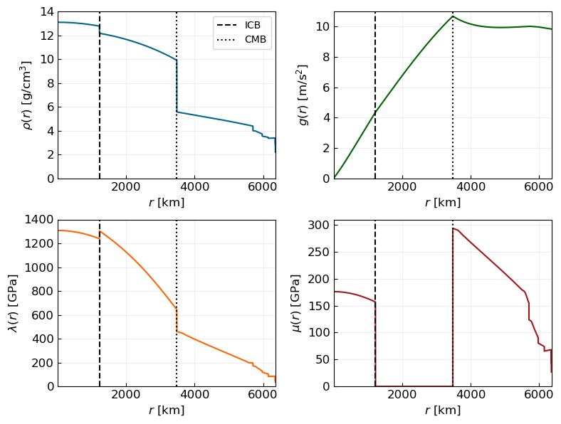

Integration of internal solutions: In-depth
[ ]:
try:
from google.colab import drive
%pip install -Uq tspice
except ImportError:
print("Not running in Colab, skipping installation")
%load_ext autoreload
%autoreload 2
[1]:
#Libraries
import numpy as np
import math as math
import matplotlib.pyplot as plt
from scipy.integrate import solve_ivp
/tmp/ipykernel_177412/2442387246.py:5: UserWarning: A NumPy version >=1.23.5 and <2.3.0 is required for this version of SciPy (detected version 2.3.5)
from scipy.integrate import solve_ivp
[2]:
#Path to save the figures
path = '/home/deivyastro/TrabajoGrado/ThesisManuscript/figures/'
[3]:
colors = ['#05668d', '#39a9ee', '#006400', "#38b000", '#ff6608', '#ff914d',
'#a4161a', '#e5383b']
Scale parameters
[4]:
###Scales
#Gravitational constant
G = 6.67430e-11 #m^3/kg/s^2
#Length
L = 6371e3 #m
print(f'L = {L:.2f} m')
#Mass
M = 5.972e24 #kg
print(f'M = {M:.2f} kg')
#Density
RHO = M/L**3 #kg/m^3
print(f'RHO = {RHO:.2f} kg/m^3')
#Pressure/Elasticity coefficients
P = G*M**2/L**4 #Pa
print(f'P = {P:.2e} Pa')
#Velocity
V = (P/RHO)**0.5 #m/s
print(f'V = {V:.2f} m/s')
#Time
T = L/V #s
print(f'T = {T:.2f} s')
#Angular frecuency
OMEGA = 1/T #rad/s
print(f'OMEGA = {OMEGA:.2e} rad/s')
#Gravity scale
Gad = G*RHO*L
print(f'Gad = {Gad:.2e} m/s^2')
L = 6371000.00 m
M = 5972000000000000327155712.00 kg
RHO = 23093.88 kg/m^3
P = 1.44e+12 Pa
V = 7909.68 m/s
T = 805.47 s
OMEGA = 1.24e-03 rad/s
Gad = 9.82e+00 m/s^2
Planetary Model
[5]:
#Choose the model
model_prem = input()
#To get the profiles from the PREM
if model_prem == 'original':
from prem_original_model import prem_functions
elif model_prem == 'hirose':
from prem_hirose_model import prem_functions
elif model_prem == 'amorin':
from PREM.data import prem_amorim as prem
elif model_prem == 'mercado':
from prem_mercado_model import prem_functions
[6]:
#Planetary profiles
planet_profile = {
'rho': lambda r: prem.rho_r_interp(r),
'g': lambda r: prem.g_r_interp(r),
'lamb': lambda r: prem.lamb_r_interp(r),
'mu': lambda r: prem.mu_r_interp(r)
}
#Main discontinuities
r_icb, r_cmb, r_repetti = 1221e3, 3.480e6, 5.701e6 #m
[7]:
#Adimensional radius
rs = np.arange(1e3, 6371e3, 500)
#Plot planetary profiles
fig, axs = plt.subplots(2,2,figsize=(8,6))
ax0 = axs[0,0]
ax0.plot(rs/1e3, planet_profile['rho'](rs)/1e3, color=colors[0], ms=5)
ax0.vlines(x=r_icb/1e3, ymin=0, ymax=14000/1e3, colors='k', linestyles='dashed', label='ICB')
ax0.vlines(x=r_cmb/1e3, ymin=0, ymax=14000/1e3, colors='k', linestyles='dotted', label='CMB')
ax0.set_xlabel(r'$r$ [km]', fontsize=12)
ax0.set_ylabel(r'$\rho(r)$ [g/cm$^3$]', fontsize=12)
ax0.xaxis.set_tick_params(direction='in', which='both', labelsize=12)
ax0.yaxis.set_tick_params(direction='in', which='both', labelsize=12)
ax0.legend()
ax0.grid(alpha=0.2)
ax0.margins(x=0, y=0)
ax1 = axs[0,1]
ax1.plot(rs/1e3, planet_profile['g'](rs), color=colors[2], ms=5)
ax1.vlines(x=r_icb/1e3, ymin=0, ymax=11, colors='k', linestyles='dashed')
ax1.vlines(x=r_cmb/1e3, ymin=0, ymax=11, colors='k', linestyles='dotted')
ax1.set_xlabel(r'$r$ [km]', fontsize=12)
ax1.set_ylabel(r'$g(r)$ [m/s$^2$]', fontsize=12)
ax1.xaxis.set_tick_params(direction='in', which='both', labelsize=12)
ax1.yaxis.set_tick_params(direction='in', which='both', labelsize=12)
ax1.grid(alpha=0.2)
ax1.margins(x=0, y=0)
ax2 = axs[1,0]
ax2.plot(rs/1e3, planet_profile['lamb'](rs)/1e9, color=colors[4], ms=5)
ax2.vlines(x=r_icb/1e3, ymin=0, ymax=1400, colors='k', linestyles='dashed')
ax2.vlines(x=r_cmb/1e3, ymin=0, ymax=1400, colors='k', linestyles='dotted')
ax2.set_xlabel(r'$r$ [km]', fontsize=12)
ax2.set_ylabel(r'$\lambda(r)$ [GPa]', fontsize=12)
ax2.xaxis.set_tick_params(direction='in', which='both', labelsize=12)
ax2.yaxis.set_tick_params(direction='in', which='both', labelsize=12)
ax2.grid(alpha=0.2)
ax2.margins(x=0, y=0)
ax3 = axs[1,1]
ax3.plot(rs/1e3, planet_profile['mu'](rs)/1e9, color=colors[6], ms=5)
ax3.vlines(x=r_icb/1e3, ymin=0, ymax=310, colors='k', linestyles='dashed')
ax3.vlines(x=r_cmb/1e3, ymin=0, ymax=310, colors='k', linestyles='dotted')
ax3.set_xlabel(r'$r$ [km]', fontsize=12)
ax3.set_ylabel(r'$\mu(r)$ [GPa]', fontsize=12)
ax3.xaxis.set_tick_params(direction='in', which='both', labelsize=12)
ax3.yaxis.set_tick_params(direction='in', which='both', labelsize=12)
ax3.grid(alpha=0.2)
ax3.margins(x=0, y=0)
fig.tight_layout()
fig.savefig(path + 'PREM_model.pdf', format='pdf', bbox_inches='tight', dpi=300)

[8]:
#Adimensional profiles
#Vph_prem_ad = lambda r_ad: Vph_prem(r_ad*L)/V
#Vsv_prem_ad = lambda r_ad: Vsv_prem(r_ad*L)/V
rho_prem_ad = lambda r_ad: planet_profile['rho'](r_ad*L)/RHO
g_prem_ad = lambda r_ad: planet_profile['g'](r_ad*L)/(Gad)
lamb_prem_ad = lambda r_ad: planet_profile['lamb'](r_ad*L)/P
mu_prem_ad = lambda r_ad: planet_profile['mu'](r_ad*L)/P
[9]:
#Adimensional radius
rs_ad = np.arange(1e3, 6371e3, 500)/L
#Plot planetary profiles
fig, axs = plt.subplots(2,3,figsize=(12,8))
ax0 = axs[0,0]
#ax0.plot(rs_ad, Vph_prem_ad(rs_ad), color='purple', ms=5)
ax0.set(xlabel=r'$r/a$', ylabel=r'$V_{ph}(r)/V$')
ax0.grid()
ax0.margins(x=0)
ax1 = axs[0,1]
#ax1.plot(rs_ad, Vsv_prem_ad(rs_ad), color='purple', ms=5)
ax1.set(xlabel=r'$r/a$', ylabel=r'$V_{sv}(r)/V$')
ax1.grid()
ax1.margins(x=0)
ax2 = axs[0,2]
ax2.plot(rs_ad, rho_prem_ad(rs_ad), color='purple', ms=5)
ax2.set(xlabel=r'$r/a$', ylabel=r'$\rho(r)/\rho_{\ast}$')
ax2.grid()
ax2.margins(x=0)
ax3 = axs[1,0]
ax3.plot(rs_ad, lamb_prem_ad(rs_ad), color='purple', ms=5)
ax3.set(xlabel=r'$r/a$', ylabel=r'$\lambda(r)/P$')
ax3.grid()
ax3.margins(x=0)
ax4 = axs[1,1]
ax4.plot(rs_ad, mu_prem_ad(rs_ad), color='purple', ms=5)
ax4.set(xlabel=r'$r/a$', ylabel=r'$\mu(r)/P$')
ax4.grid()
ax4.margins(x=0)
ax5 = axs[1,2]
ax5.plot(rs_ad, g_prem_ad(rs_ad), color='purple', ms=5)
ax5.set(xlabel=r'$r/a$', ylabel=r'$g(r)/G_{ad}$')
ax5.grid()
ax5.margins(x=0)
fig.suptitle('Adimensional planetary profiles', fontsize=15)
fig.tight_layout();

Integration parameters
[10]:
#Degree
n = 2
#Linear frequency in [cycles/day]
f_day = 1.935022 #M2 frequency
#Linear frequency in [cycles/s]
f_s = f_day*(1/(3600*24))
#Angular frequency in [rad/s]
omega = f_s*2*np.pi
#Number of variables
n_ys = 6
#Number of solutions
n_sol = 5
#Parametros adimensionales
params_ad = dict(n=n,
omega=omega/OMEGA,
lam=lamb_prem_ad,
mu=mu_prem_ad,
rho=rho_prem_ad,
g=g_prem_ad)
params_ad
[10]:
{'n': 2,
'omega': 0.11334455955539151,
'lam': <function __main__.<lambda>(r_ad)>,
'mu': <function __main__.<lambda>(r_ad)>,
'rho': <function __main__.<lambda>(r_ad)>,
'g': <function __main__.<lambda>(r_ad)>}
Layers
[11]:
#Total steps
nsteps_total = 50000
#Delta r for transition
dr = 1
#Initial radius for integration
r0_integration = 6e3 #int(L/1e3) #Approx. a thousand parts of the radius
#First layer: Inner core
r0_inner_ad = r0_integration/L
rf_inner_ad = r_icb/L
nsteps_inner = int(rf_inner_ad*nsteps_total)
#Second layer: Outer core
r0_outer_ad = (r_icb+dr)/L
rf_outer_ad = r_cmb/L
nsteps_outer = int((rf_outer_ad - r0_outer_ad)*nsteps_total)
#Third layer: Mantle + crust
r0_mantle_ad = (r_cmb+dr)/L
rf_mantle_ad = 1 #r_repetti/L
nsteps_mantle = int((rf_mantle_ad - r0_mantle_ad)*nsteps_total)
integrate_litosphere = False
#Fourth layer: Litosphere (Crust + Upper Mantle)
#r0_lit_ad = (r_repetti+dr)/L
#rf_lit_ad = 1
#nsteps_lit = int((rf_lit_ad - r0_lit_ad)*nsteps_total)
#Step of integration (including the final point)
rs_inner_ad = np.linspace(r0_inner_ad, rf_inner_ad, nsteps_inner)
rs_outer_ad = np.linspace(r0_outer_ad, rf_outer_ad, nsteps_outer)
rs_mantle_ad = np.linspace(r0_mantle_ad, rf_mantle_ad, nsteps_mantle)
#rs_lit_ad = np.linspace(r0_lit_ad, rf_lit_ad, nsteps_lit)
[12]:
#Integration ranges
print('Delta r for transition:', dr, 'm \n')
print('Integration starts at r0 =', r0_integration, 'm \n')
print('Integration in the inner core:')
print(f'From {rs_inner_ad[0]} to {rs_inner_ad[-1]}')
print(f'Steps of {(rs_inner_ad[1] - rs_inner_ad[0])*L:.1f} m\n')
print('Integration in the outer core:')
print(f'From {rs_outer_ad[0]} to {rs_outer_ad[-1]}')
print(f'Steps of {(rs_outer_ad[1] - rs_outer_ad[0])*L:.1f} m\n')
if integrate_litosphere:
print('Integration in the lower mantle:')
print(f'From {rs_mantle_ad[0]} to {rs_mantle_ad[-1]}')
print(f'Steps of {(rs_mantle_ad[1] - rs_mantle_ad[0])*L:.1f} m\n')
print('Integration in the litosphere:')
print(f'From {rs_lit_ad[0]} to {rs_lit_ad[-1]}')
print(f'Steps of {(rs_lit_ad[1] - rs_lit_ad[0])*L:.1f} m\n')
else:
print('Integration in the mantle+crust:')
print(f'From {rs_mantle_ad[0]} to {rs_mantle_ad[-1]}')
print(f'Steps of {(rs_mantle_ad[1] - rs_mantle_ad[0])*L:.1f} m\n')
print('Total steps:', nsteps_inner + nsteps_outer + nsteps_mantle)#+ nsteps_lit)
Delta r for transition: 1 m
Integration starts at r0 = 6000.0 m
Integration in the inner core:
From 0.0009417673834562863 to 0.19164966253335425
Steps of 126.8 m
Integration in the outer core:
From 0.19164981949458484 to 0.5462250824046461
Steps of 127.4 m
Integration in the mantle+crust:
From 0.5462252393658766 to 1.0
Steps of 127.4 m
Total steps: 49998
Adimensional coupled ODEs
[13]:
from IntegrationTools.DifferentialEquations import *
[14]:
#Set of equations to use for each layer
#Inner core (solid)
equations_set_inner = 'AmorinGudkova2024'
#Outer core (fluid)
equations_set_outer = 'AmorinGudkova2024'
#Mantle+lithosphere (solid)
equations_set_mantle = 'AmorinGudkova2024'
Initial solutions
[15]:
from IntegrationTools.InitialConditions import *
[16]:
#Internal independent solutions
if equations_set_inner == 'XuSun2003_ad':
Y0_inner_ad = Y0_XuSun2003_ad(rs_inner_ad[0], params_ad)
elif equations_set_inner == 'AmorinGudkova2024':
Y0_inner_ad = Y0_AmorinGudkova2024_ad(rs_inner_ad[0], params_ad)
Y0_1_inner_ad, Y0_2_inner_ad, Y0_3_inner_ad = Y0_inner_ad[:,0], Y0_inner_ad[:,1], Y0_inner_ad[:,2]
[17]:
print('Initial conditions at the center:')
print('Y0_1_inner_ad:', Y0_1_inner_ad)
print('Y0_2_inner_ad:', Y0_2_inner_ad)
print('Y0_3_inner_ad:', Y0_3_inner_ad)
Initial conditions at the center:
Y0_1_inner_ad: [ 9.44322501e-04 4.00000000e+00 4.72161250e-04 2.00000000e+00
2.10556246e-06 -2.25395396e-03]
Y0_2_inner_ad: [ 0.00000000e+00 -4.81723884e-06 8.35277794e-10 2.16203012e-07
0.00000000e+00 0.00000000e+00]
Y0_3_inner_ad: [ 8.35277794e-10 4.66297474e-06 0.00000000e+00 1.08101506e-07
0.00000000e+00 -5.94885016e-09]
[18]:
#Testing the function with the ODEs
dydr_solid_XuSun2003_ad(rs_inner_ad[0], Y0_1_inner_ad, params_ad)
[18]:
array([ 4.27133913e+00, 1.02714016e+04, 1.59086344e+01, -9.12350726e+03,
-8.97938175e-03, 4.04545012e+01])
Integration
Inner core
[19]:
#Integration in the inner core
if equations_set_inner == 'XuSun2003_ad':
y_1_inner_ad = solve_ivp(dydr_solid_XuSun2003_ad, (r0_inner_ad, rf_inner_ad), Y0_1_inner_ad, t_eval=rs_inner_ad, method='BDF', args=(params_ad,), dense_output=False)
y_2_inner_ad = solve_ivp(dydr_solid_XuSun2003_ad, (r0_inner_ad, rf_inner_ad), Y0_2_inner_ad, t_eval=rs_inner_ad, method='BDF', args=(params_ad,), dense_output=False)
y_3_inner_ad = solve_ivp(dydr_solid_XuSun2003_ad, (r0_inner_ad, rf_inner_ad), Y0_3_inner_ad, t_eval=rs_inner_ad, method='BDF', args=(params_ad,), dense_output=False)
elif equations_set_inner == 'AmorinGudkova2024':
y_1_inner_ad = solve_ivp(dydr_solid_AmorinGudkova2024_ad, (r0_inner_ad, rf_inner_ad), Y0_1_inner_ad, t_eval=rs_inner_ad, method='BDF', args=(params_ad,), dense_output=False)
y_2_inner_ad = solve_ivp(dydr_solid_AmorinGudkova2024_ad, (r0_inner_ad, rf_inner_ad), Y0_2_inner_ad, t_eval=rs_inner_ad, method='BDF', args=(params_ad,), dense_output=False)
y_3_inner_ad = solve_ivp(dydr_solid_AmorinGudkova2024_ad, (r0_inner_ad, rf_inner_ad), Y0_3_inner_ad, t_eval=rs_inner_ad, method='BDF', args=(params_ad,), dense_output=False)
[20]:
#Plot the solutions
fig, axs = plt.subplots(6,3,figsize=(8,8.75), sharex=True, constrained_layout=True)
#y1_1
y1_1 = y_1_inner_ad.y[0,:]
ax1 = axs[0,0]
ax1.plot(rs_inner_ad, y1_1, color='red', ms=5)
ax1.set_ylabel(r'$\tilde{y}_1(\tilde{r})$', fontsize=12)
ax1.set_title(r'$\vec{y}^{A}$', fontsize=12)
#y1_2
y1_2 = y_2_inner_ad.y[0,:]
ax2 = axs[0,1]
ax2.plot(rs_inner_ad, y1_2, color='red', ms=5)
ax2.set_title(r'$\vec{y}^{B}$', fontsize=12)
#y1_3
y1_3 = y_3_inner_ad.y[0,:]
ax3 = axs[0,2]
ax3.plot(rs_inner_ad, y1_3, color='red', ms=5)
ax3.set_title(r'$\vec{y}^{C}$', fontsize=12)
#y2_1
y2_1 = y_1_inner_ad.y[1,:]
ax1 = axs[1,0]
ax1.plot(rs_inner_ad, y2_1, color='purple', ms=5)
ax1.set_ylabel(r'$\tilde{y}_2(\tilde{r})$', fontsize=12)
#y2_2
y2_2 = y_2_inner_ad.y[1,:]
ax2 = axs[1,1]
ax2.plot(rs_inner_ad, y2_2, color='purple', ms=5)
#y2_3
y2_3 = y_3_inner_ad.y[1,:]
ax3 = axs[1,2]
ax3.plot(rs_inner_ad, y2_3, color='purple', ms=5)
#y3_1
y3_1 = y_1_inner_ad.y[2,:]
ax1 = axs[2,0]
ax1.plot(rs_inner_ad, y3_1, color='blue', ms=5)
ax1.set_ylabel(r'$\tilde{y}_3(\tilde{r})$', fontsize=12)
#y3_2
y3_2 = y_2_inner_ad.y[2,:]
ax2 = axs[2,1]
ax2.plot(rs_inner_ad, y3_2, color='blue', ms=5)
#y3_3
y3_3 = y_3_inner_ad.y[2,:]
ax3 = axs[2,2]
ax3.plot(rs_inner_ad, y3_3, color='blue', ms=5)
#y4_1
y4_1 = y_1_inner_ad.y[3,:]
ax1 = axs[3,0]
ax1.plot(rs_inner_ad, y4_1, color='green', ms=5)
ax1.set_ylabel(r'$\tilde{y}_4(\tilde{r})$', fontsize=12)
#y4_2
y4_2 = y_2_inner_ad.y[3,:]
ax2 = axs[3,1]
ax2.plot(rs_inner_ad, y4_2, color='green', ms=5)
#y4_3
y4_3 = y_3_inner_ad.y[3,:]
ax3 = axs[3,2]
ax3.plot(rs_inner_ad, y4_3, color='green', ms=5)
#y5_1
y5_1 = y_1_inner_ad.y[4,:]
ax1 = axs[4,0]
ax1.plot(rs_inner_ad, y5_1, color='orange', ms=5)
ax1.set_ylabel(r'$\tilde{y}_5(\tilde{r})$', fontsize=12)
#y5_2
y5_2 = y_2_inner_ad.y[4,:]
ax2 = axs[4,1]
ax2.plot(rs_inner_ad, y5_2, color='orange', ms=5)
#y5_3
y5_3 = y_3_inner_ad.y[4,:]
ax3 = axs[4,2]
ax3.plot(rs_inner_ad, y5_3, color='orange', ms=5)
#y6_1
y6_1 = y_1_inner_ad.y[5,:]
ax1 = axs[5,0]
ax1.plot(rs_inner_ad, y6_1, color='deeppink', ms=5)
ax1.set_xlabel(r'$\tilde{r}$', fontsize=12)
ax1.set_ylabel(r'$\tilde{y}_6(\tilde{r})$', fontsize=12)
#y6_2
y6_2 = y_2_inner_ad.y[5,:]
ax2 = axs[5,1]
ax2.plot(rs_inner_ad, y6_2, color='deeppink', ms=5)
ax2.set_xlabel(r'$\tilde{r}$', fontsize=12)#, ylabel=r'$\tilde{y}_2(\tilde{r})$')
#y6_3
y6_3 = y_3_inner_ad.y[5,:]
ax3 = axs[5,2]
ax3.plot(rs_inner_ad, y6_3, color='deeppink', ms=5)
ax3.set_xlabel(r'$\tilde{r}$', fontsize=12)#, ylabel=r'$\tilde{y}_3(\tilde{r})$')
for ax in axs.flat:
ax.xaxis.set_tick_params(direction='in', which='both', labelsize=12)
ax.yaxis.set_tick_params(direction='in', which='both', labelsize=12)
ax.grid(alpha=0.2)
ax.margins(x=0, y=0.1)
fig.suptitle(r'$n=%.0f$, $f = %.4f$ cpd' %(n, omega*(3600*24)/(2*np.pi)),
fontsize=12,
#+ f'; ODEs version: {equations_set_inner}',
y=0.94)
fig.tight_layout(rect=[0, 0, 1, 0.97]);
fig.savefig(path + 'InternalSolutions_inner_core.pdf', format='pdf', bbox_inches='tight', dpi=300)
/tmp/ipykernel_177412/1990893080.py:116: UserWarning: The figure layout has changed to tight
fig.tight_layout(rect=[0, 0, 1, 0.97]);

Outer core
[21]:
#Initial conditions at the outer core = final conditions of the inner core
if (equations_set_outer == 'XuSun2003_ad') or (equations_set_outer == 'AmorinGudkova2024modified'):
#In this approach, after the inner core we keep with three integrations
Y0_1_outer_ad = y_1_inner_ad.y[[0,1,4,5],-1]
Y0_2_outer_ad = y_2_inner_ad.y[[0,1,4,5],-1]
Y0_3_outer_ad = y_3_inner_ad.y[[0,1,4,5],-1]
elif equations_set_outer == 'AmorinGudkova2024':
#We use the yis to define the zis
y1_A_c, y2_A_c, y4_A_c, y5_A_c, y6_A_c = y_1_inner_ad.y[[0,1,3,4,5],-1]
y1_B_c, y2_B_c, y4_B_c, y5_B_c, y6_B_c = y_2_inner_ad.y[[0,1,3,4,5],-1]
y1_C_c, y2_C_c, y4_C_c, y5_C_c, y6_C_c = y_3_inner_ad.y[[0,1,3,4,5],-1]
#Gravity and density in the ICB
g0_icb = params_ad['g'](rs_inner_ad[-1])
rho0_icb = params_ad['rho'](rs_inner_ad[-1])
rs_icb = rs_inner_ad[-1]
#New coeficients
denom = g0_icb*rho0_icb*(y1_B_c*y4_C_c - y4_B_c*y1_C_c) + (y4_B_c*y2_C_c - y2_B_c*y4_C_c) + rho0_icb*(y4_B_c*y5_C_c - y5_B_c*y4_C_c)
numV = g0_icb*rho0_icb*(y4_A_c*y1_C_c - y1_A_c*y4_C_c) + (y2_A_c*y4_C_c - y4_A_c*y2_C_c) + rho0_icb*(y5_A_c*y4_C_c - y4_A_c*y5_C_c)
numS = g0_icb*rho0_icb*(y1_A_c*y4_B_c - y4_A_c*y1_B_c) + (y4_A_c*y2_B_c - y2_A_c*y4_B_c) + rho0_icb*(y4_A_c*y5_B_c - y5_A_c*y4_B_c)
V_A = numV/denom
S_A = numS/denom
#Functions to combine the yis then
B_from_A = lambda A: A*V_A
C_from_A = lambda A: A*S_A
#New variables (combinations of the yis)
z1_til = y1_A_c + V_A*y1_B_c + S_A*y1_C_c
z5_til = y5_A_c + V_A*y5_B_c + S_A*y5_C_c
z6_til = y6_A_c + V_A*y6_B_c + S_A*y6_C_c
z7_til = z6_til + 4*np.pi*rho0_icb*z1_til + ((n+1)/rs_icb - 4*np.pi*rho0_icb/g0_icb)*z5_til
#In this approach, after the inner core we just keep with one integration
Z0_outer_ad = np.array([z5_til, z7_til])
[22]:
#Integration in the outer core (fluid)
if equations_set_outer == 'XuSun2003':
y_1_outer_ad_redu = solve_ivp(dydr_fluid_XuSun2003_ad, (r0_outer_ad, rf_outer_ad), Y0_1_outer_ad, t_eval=rs_outer_ad, method='BDF', args=(params_ad,), dense_output=False)
y_2_outer_ad_redu = solve_ivp(dydr_fluid_XuSun2003_ad, (r0_outer_ad, rf_outer_ad), Y0_2_outer_ad, t_eval=rs_outer_ad, method='BDF', args=(params_ad,), dense_output=False)
y_3_outer_ad_redu = solve_ivp(dydr_fluid_XuSun2003_ad, (r0_outer_ad, rf_outer_ad), Y0_3_outer_ad, t_eval=rs_outer_ad, method='BDF', args=(params_ad,), dense_output=False)
elif equations_set_outer == 'AmorinGudkova2024modified':
y_1_outer_ad_redu = solve_ivp(dydr_fluid_AmorinGudkova2024_ad, (r0_outer_ad, rf_outer_ad), Y0_1_outer_ad, t_eval=rs_outer_ad, method='BDF', args=(params_ad,), dense_output=False)
y_2_outer_ad_redu = solve_ivp(dydr_fluid_AmorinGudkova2024_ad, (r0_outer_ad, rf_outer_ad), Y0_2_outer_ad, t_eval=rs_outer_ad, method='BDF', args=(params_ad,), dense_output=False)
y_3_outer_ad_redu = solve_ivp(dydr_fluid_AmorinGudkova2024_ad, (r0_outer_ad, rf_outer_ad), Y0_3_outer_ad, t_eval=rs_outer_ad, method='BDF', args=(params_ad,), dense_output=False)
elif equations_set_outer == 'AmorinGudkova2024':
z_outer_ad_redu = solve_ivp(dzdr_fluid_AmorinGudkova2024_ad, (r0_outer_ad, rf_outer_ad), Z0_outer_ad, t_eval=rs_outer_ad, method='BDF', args=(params_ad,), dense_output=False)
[23]:
if (equations_set_outer == 'XuSun2003') or (equations_set_outer == 'AmorinGudkova2024modified'):
#y3 calculation
y1_1_ad, y2_1_ad = y_1_outer_ad_redu.y[:2]
y5_1_ad, y6_1_ad = y_1_outer_ad_redu.y[2:]
y3_1_ad = (params_ad['g'](rs_outer_ad)*y1_1_ad - y2_1_ad/params_ad['rho'](rs_outer_ad) - y5_1_ad)/(params_ad['omega']**2*rs_outer_ad)
y1_2_ad, y2_2_ad = y_2_outer_ad_redu.y[:2]
y5_2_ad, y6_2_ad = y_2_outer_ad_redu.y[2:]
y3_2_ad = (params_ad['g'](rs_outer_ad)*y1_2_ad - y2_2_ad/params_ad['rho'](rs_outer_ad) - y5_2_ad)/(params_ad['omega']**2*rs_outer_ad)
y1_3_ad, y2_3_ad = y_3_outer_ad_redu.y[:2]
y5_3_ad, y6_3_ad = y_3_outer_ad_redu.y[2:]
y3_3_ad = (params_ad['g'](rs_outer_ad)*y1_3_ad - y2_3_ad/params_ad['rho'](rs_outer_ad) - y5_3_ad)/(params_ad['omega']**2*rs_outer_ad)
#New array with all variables
y_1_outer_ad = np.zeros((6, len(rs_outer_ad)))
y_1_outer_ad[:2] = y1_1_ad, y2_1_ad
y_1_outer_ad[4:] = y5_1_ad, y6_1_ad
y_1_outer_ad[2] = y3_1_ad
y_2_outer_ad = np.zeros((6, len(rs_outer_ad)))
y_2_outer_ad[:2] = y1_2_ad, y2_2_ad
y_2_outer_ad[4:] = y5_2_ad, y6_2_ad
y_2_outer_ad[2] = y3_2_ad
y_3_outer_ad = np.zeros((6, len(rs_outer_ad)))
y_3_outer_ad[:2] = y1_3_ad, y2_3_ad
y_3_outer_ad[4:] = y5_3_ad, y6_3_ad
y_3_outer_ad[2] = y3_3_ad
elif equations_set_outer == 'AmorinGudkova2024':
#In this approach, we don't need to calculate all the zis in the outer core
z5_outer_ad = z_outer_ad_redu.y[0,:]
z7_outer_ad = z_outer_ad_redu.y[1,:]
[24]:
#Plot the solutions
if (equations_set_outer == 'XuSun2003') or (equations_set_outer == 'AmorinGudkova2024modified'):
fig, axs = plt.subplots(6,3,figsize=(10,15), sharex=True)
#y1_1
y1_1 = y_1_outer_ad[0,:]
ax1 = axs[0,0]
ax1.plot(rs_outer_ad, y1_1, color='red', ms=5)
ax1.set(ylabel=r'$\tilde{y}_1(r)$')
ax1.set_title('1st solution')
ax1.grid()
ax1.margins(0)
#y1_2
y1_2 = y_2_outer_ad[0,:]
ax2 = axs[0,1]
ax2.plot(rs_outer_ad, y1_2, color='red', ms=5)
ax2.set_title('2nd solution')
ax2.grid()
ax2.margins(0)
#y1_3
y1_3 = y_3_outer_ad[0,:]
ax3 = axs[0,2]
ax3.plot(rs_outer_ad, y1_3, color='red', ms=5)
ax3.set_title('3rd solution')
ax3.grid()
ax3.margins(0)
#y2_1
y2_1 = y_1_outer_ad[1,:]
ax1 = axs[1,0]
ax1.plot(rs_outer_ad, y2_1, color='purple', ms=5)
ax1.set(ylabel=r'$\tilde{y}_2(r)$')
ax1.grid()
ax1.margins(0)
#y2_2
y2_2 = y_2_outer_ad[1,:]
ax2 = axs[1,1]
ax2.plot(rs_outer_ad, y2_2, color='purple', ms=5)
ax2.grid()
ax2.margins(0)
#y2_3
y2_3 = y_3_outer_ad[1,:]
ax3 = axs[1,2]
ax3.plot(rs_outer_ad, y2_3, color='purple', ms=5)
ax3.grid()
ax3.margins(0)
#y3_1
y3_1 = y_1_outer_ad[2,:]
ax1 = axs[2,0]
ax1.plot(rs_outer_ad, y3_1, color='blue', ms=5)
ax1.set(ylabel=r'$\tilde{y}_3(r)$')
ax1.grid()
ax1.margins(0)
#y3_2
y3_2 = y_2_outer_ad[2,:]
ax2 = axs[2,1]
ax2.plot(rs_outer_ad, y3_2, color='blue', ms=5)
ax2.grid()
ax2.margins(0)
#y3_3
y3_3 = y_3_outer_ad[2,:]
ax3 = axs[2,2]
ax3.plot(rs_outer_ad, y3_3, color='blue', ms=5)
ax3.grid()
ax3.margins(0)
#y4_1
y4_1 = y_1_outer_ad[3,:]
ax1 = axs[3,0]
ax1.plot(rs_outer_ad, y4_1, color='green', ms=5)
ax1.set(ylabel=r'$\tilde{y}_4(r)$')
ax1.grid()
ax1.margins(0)
#y4_2
y4_2 = y_2_outer_ad[3,:]
ax2 = axs[3,1]
ax2.plot(rs_outer_ad, y4_2, color='green', ms=5)
ax2.grid()
ax2.margins(0)
#y4_3
y4_3 = y_3_outer_ad[3,:]
ax3 = axs[3,2]
ax3.plot(rs_outer_ad, y4_3, color='green', ms=5)
ax3.grid()
ax3.margins(0)
#y5_1
y5_1 = y_1_outer_ad[4,:]
ax1 = axs[4,0]
ax1.plot(rs_outer_ad, y5_1, color='orange', ms=5)
ax1.set(ylabel=r'$\tilde{y}_5(r)$')
ax1.grid()
ax1.margins(0)
#y5_2
y5_2 = y_2_outer_ad[4,:]
ax2 = axs[4,1]
ax2.plot(rs_outer_ad, y5_2, color='orange', ms=5)
ax2.grid()
ax2.margins(0)
#y5_3
y5_3 = y_3_outer_ad[4,:]
ax3 = axs[4,2]
ax3.plot(rs_outer_ad, y5_3, color='orange', ms=5)
ax3.grid()
ax3.margins(0)
#y6_1
y6_1 = y_1_outer_ad[5,:]
ax1 = axs[5,0]
ax1.plot(rs_outer_ad, y6_1, color='deeppink', ms=5)
ax1.set(xlabel=r'$r/a$', ylabel=r'$\tilde{y}_6(r)$')
ax1.grid()
ax1.margins(0)
#y6_2
y6_2 = y_2_outer_ad[5,:]
ax2 = axs[5,1]
ax2.plot(rs_outer_ad, y6_2, color='deeppink', ms=5)
ax2.set(xlabel=r'$r/a$')#, ylabel=r'$\tilde{y}_2(r)$')
ax2.grid()
ax2.margins(0)
#y6_3
y6_3 = y_3_outer_ad[5,:]
ax3 = axs[5,2]
ax3.plot(rs_outer_ad, y6_3, color='deeppink', ms=5)
ax3.set(xlabel=r'$r/a$')#, ylabel=r'$\tilde{y}_3(r)$')
ax3.grid()
ax3.margins(0)
fig.suptitle(r'$f = %.4f $ cycles/day' %(omega*(3600*24)/(2*np.pi)),
#+ f'; ODEs version: {equations_set_outer}',
y=0.96)
fig.tight_layout(rect=[0, 0, 1, 0.97]);
elif equations_set_outer == 'AmorinGudkova2024':
fig, axs = plt.subplots(1,2,figsize=(8,3), sharex=True)
#z5
ax1 = axs[0]
ax1.plot(rs_outer_ad, z5_outer_ad, color='red', ms=5)
ax1.set_ylabel(r'$\tilde{z}_5(\tilde{r})$', fontsize=12)
ax1.set_xlabel(r'$\tilde{r}$', fontsize=12)
#z7
ax2 = axs[1]
ax2.plot(rs_outer_ad, z7_outer_ad, color='red', ms=5)
ax2.set_ylabel(r'$\tilde{z}_7(\tilde{r})$', fontsize=12)
ax2.set_xlabel(r'$\tilde{r}$', fontsize=12)
for ax in axs.flat:
ax.xaxis.set_tick_params(direction='in', which='both', labelsize=12)
ax.yaxis.set_tick_params(direction='in', which='both', labelsize=12)
ax.grid(alpha=0.2)
ax.margins(x=0, y=0.1)
fig.suptitle(r'$n=%.0f$, $f = %.4f $ cpd' %(n, omega*(3600*24)/(2*np.pi)),
fontsize=12,
y=0.9)
fig.tight_layout(rect=[0, 0, 1, 0.97]);
fig.savefig(path + 'InternalSolutions_outer_core.pdf', format='pdf', bbox_inches='tight', dpi=300)

Mantle
[25]:
#Initial conditions at the mantle = final conditions of the outer core
if (equations_set_outer == 'XuSun2003') or (equations_set_outer == 'AmorinGudkova2024modified'):
#In this approach, after the outer core we keep with three integrations
Y0_1_mantle_ad = y_1_outer_ad[:,-1]
Y0_2_mantle_ad = y_2_outer_ad[:,-1]
Y0_3_mantle_ad = y_3_outer_ad[:,-1]
#New independent solution at the CMB
Y0_4_mantle_ad = np.zeros(n_ys)
Y0_4_mantle_ad[2] = 1 #Discontinuity in the tangential displacement
#print(Y0_4_mantle_ad)
#New independent solution at the CMB
if n_sol == 5:
Y0_5_mantle_ad = np.zeros(n_ys)
Y0_5_mantle_ad[1] = 1 #Discontinuity in the normal pressure
#print(Y0_5_mantle_ad)
elif equations_set_outer == 'AmorinGudkova2024':
#Solutions zis at the CMB
z5_b, z7_b = z5_outer_ad[-1], z7_outer_ad[-1]
#Gravity and density at the CMB
g0_cmb = params_ad['g'](rs_outer_ad[-1])
rho0_cmb = params_ad['rho'](rs_outer_ad[-1])
rs_cmb = rs_outer_ad[-1]
#New three independent solutions from the zis
Y0_alpha_mantle_ad = np.array([0, -rho0_cmb*z5_b, 0, 0, z5_b, z7_b - ((n+1)/rs_cmb - 4*np.pi*rho0_cmb/g0_cmb)*z5_b]) #Alpha solution (coefficient A)
Y0_beta_mantle_ad = np.array([1, rho0_cmb*g0_cmb, 0, 0, 0, -4*np.pi*rho0_cmb]) #Beta solution (coefficient D=z1_b)
Y0_gamma_mantle_ad = np.array([0, 0, 1, 0, 0, 0]) #Beta solution (coefficient E=y3_b / discontinuity in the tangential displacement)
[26]:
#Integration
if equations_set_mantle == 'XuSun2003_ad':
y_1_mantle_ad = solve_ivp(dydr_solid_XuSun2003_ad, (r0_mantle_ad, rf_mantle_ad), Y0_1_mantle_ad, t_eval=rs_mantle_ad, method='BDF', args=(params_ad,), dense_output=True)
y_2_mantle_ad = solve_ivp(dydr_solid_XuSun2003_ad, (r0_mantle_ad, rf_mantle_ad), Y0_2_mantle_ad, t_eval=rs_mantle_ad, method='BDF', args=(params_ad,), dense_output=True)
y_3_mantle_ad = solve_ivp(dydr_solid_XuSun2003_ad, (r0_mantle_ad, rf_mantle_ad), Y0_3_mantle_ad, t_eval=rs_mantle_ad, method='BDF', args=(params_ad,), dense_output=True)
y_4_mantle_ad = solve_ivp(dydr_solid_XuSun2003_ad, (r0_mantle_ad, rf_mantle_ad), Y0_4_mantle_ad, t_eval=rs_mantle_ad, method='BDF', args=(params_ad,), dense_output=True)
if n_sol == 5:
y_5_mantle_ad = solve_ivp(dydr_solid_XuSun2003_ad, (r0_mantle_ad, rf_mantle_ad), Y0_5_mantle_ad, t_eval=rs_mantle_ad, method='BDF', args=(params_ad,), dense_output=True)
#We should check how to continue in the mantle with depending on the outer core equations
elif (equations_set_mantle == 'AmorinGudkova2024') & (equations_set_outer == 'AmorinGudkova2024modified'):
y_1_mantle_ad = solve_ivp(dydr_solid_AmorinGudkova2024_ad, (r0_mantle_ad, rf_mantle_ad), Y0_1_mantle_ad, t_eval=rs_mantle_ad, method='BDF', args=(params_ad,), dense_output=True)
y_2_mantle_ad = solve_ivp(dydr_solid_AmorinGudkova2024_ad, (r0_mantle_ad, rf_mantle_ad), Y0_2_mantle_ad, t_eval=rs_mantle_ad, method='BDF', args=(params_ad,), dense_output=True)
y_3_mantle_ad = solve_ivp(dydr_solid_AmorinGudkova2024_ad, (r0_mantle_ad, rf_mantle_ad), Y0_3_mantle_ad, t_eval=rs_mantle_ad, method='BDF', args=(params_ad,), dense_output=True)
y_4_mantle_ad = solve_ivp(dydr_solid_AmorinGudkova2024_ad, (r0_mantle_ad, rf_mantle_ad), Y0_4_mantle_ad, t_eval=rs_mantle_ad, method='BDF', args=(params_ad,), dense_output=True)
if n_sol == 5:
y_5_mantle_ad = solve_ivp(dydr_solid_AmorinGudkova2024_ad, (r0_mantle_ad, rf_mantle_ad), Y0_5_mantle_ad, t_eval=rs_mantle_ad, method='BDF', args=(params_ad,), dense_output=True)
elif (equations_set_mantle == 'AmorinGudkova2024') & (equations_set_outer == 'AmorinGudkova2024'):
y_alpha_mantle_ad = solve_ivp(dydr_solid_AmorinGudkova2024_ad, (r0_mantle_ad, rf_mantle_ad), Y0_alpha_mantle_ad, t_eval=rs_mantle_ad, method='BDF', args=(params_ad,), dense_output=True)
y_beta_mantle_ad = solve_ivp(dydr_solid_AmorinGudkova2024_ad, (r0_mantle_ad, rf_mantle_ad), Y0_beta_mantle_ad, t_eval=rs_mantle_ad, method='BDF', args=(params_ad,), dense_output=True)
y_gamma_mantle_ad = solve_ivp(dydr_solid_AmorinGudkova2024_ad, (r0_mantle_ad, rf_mantle_ad), Y0_gamma_mantle_ad, t_eval=rs_mantle_ad, method='BDF', args=(params_ad,), dense_output=True)
[27]:
#Plot the solutions
if (equations_set_mantle == 'XuSun2003_ad') or ((equations_set_mantle == 'AmorinGudkova2024') & (equations_set_outer == 'AmorinGudkova2024modified')):
fig, axs = plt.subplots(6,5,figsize=(10,15), sharex=True)
#y1_1
y1_1 = y_1_mantle_ad.y[0,:]
ax1 = axs[0,0]
ax1.plot(rs_mantle_ad, y1_1, color='red', ms=5)
ax1.set(ylabel=r'$\tilde{y}_1(r)$')
ax1.set_title('1st solution')
ax1.grid()
ax1.margins(0)
#y1_2
y1_2 = y_2_mantle_ad.y[0,:]
ax2 = axs[0,1]
ax2.plot(rs_mantle_ad, y1_2, color='red', ms=5)
ax2.set_title('2nd solution')
ax2.grid()
ax2.margins(0)
#y1_3
y1_3 = y_3_mantle_ad.y[0,:]
ax3 = axs[0,2]
ax3.plot(rs_mantle_ad, y1_3, color='red', ms=5)
ax3.set_title('3rd solution')
ax3.grid()
ax3.margins(0)
#y1_4
y1_4 = y_4_mantle_ad.y[0,:]
ax4 = axs[0,3]
ax4.plot(rs_mantle_ad, y1_4, color='red', ms=5)
ax4.set_title('4th solution')
ax4.grid()
ax4.margins(0)
#y1_5
y1_5 = y_5_mantle_ad.y[0,:]
ax5 = axs[0,4]
ax5.plot(rs_mantle_ad, y1_5, color='red', ms=5)
ax5.set_title('5th solution')
ax5.grid()
ax5.margins(0)
#y2_1
y2_1 = y_1_mantle_ad.y[1,:]
ax1 = axs[1,0]
ax1.plot(rs_mantle_ad, y2_1, color='purple', ms=5)
ax1.set(ylabel=r'$\tilde{y}_2(r)$')
ax1.grid()
ax1.margins(0)
#y2_2
y2_2 = y_2_mantle_ad.y[1,:]
ax2 = axs[1,1]
ax2.plot(rs_mantle_ad, y2_2, color='purple', ms=5)
ax2.grid()
ax2.margins(0)
#y2_3
y2_3 = y_3_mantle_ad.y[1,:]
ax3 = axs[1,2]
ax3.plot(rs_mantle_ad, y2_3, color='purple', ms=5)
ax3.grid()
ax3.margins(0)
#y2_4
y2_4 = y_4_mantle_ad.y[1,:]
ax4 = axs[1,3]
ax4.plot(rs_mantle_ad, y2_4, color='purple', ms=5)
ax4.grid()
ax4.margins(0)
#y2_5
y2_5 = y_5_mantle_ad.y[1,:]
ax5 = axs[1,4]
ax5.plot(rs_mantle_ad, y2_5, color='purple', ms=5)
ax5.grid()
ax5.margins(0)
#y3_1
y3_1 = y_1_mantle_ad.y[2,:]
ax1 = axs[2,0]
ax1.plot(rs_mantle_ad, y3_1, color='blue', ms=5)
ax1.set(ylabel=r'$\tilde{y}_3(r)$')
ax1.grid()
ax1.margins(0)
#y3_2
y3_2 = y_2_mantle_ad.y[2,:]
ax2 = axs[2,1]
ax2.plot(rs_mantle_ad, y3_2, color='blue', ms=5)
ax2.grid()
ax2.margins(0)
#y3_3
y3_3 = y_3_mantle_ad.y[2,:]
ax3 = axs[2,2]
ax3.plot(rs_mantle_ad, y3_3, color='blue', ms=5)
ax3.grid()
ax3.margins(0)
#y3_4
y3_4 = y_4_mantle_ad.y[2,:]
ax4 = axs[2,3]
ax4.plot(rs_mantle_ad, y3_4, color='blue', ms=5)
ax4.grid()
ax4.margins(0)
#y3_5
y3_5 = y_5_mantle_ad.y[2,:]
ax5 = axs[2,4]
ax5.plot(rs_mantle_ad, y3_5, color='blue', ms=5)
ax5.grid()
ax5.margins(0)
#y4_1
y4_1 = y_1_mantle_ad.y[3,:]
ax1 = axs[3,0]
ax1.plot(rs_mantle_ad, y4_1, color='green', ms=5)
ax1.set(ylabel=r'$\tilde{y}_4(r)$')
ax1.grid()
ax1.margins(0)
#y4_2
y4_2 = y_2_mantle_ad.y[3,:]
ax2 = axs[3,1]
ax2.plot(rs_mantle_ad, y4_2, color='green', ms=5)
ax2.grid()
ax2.margins(0)
#y4_3
y4_3 = y_3_mantle_ad.y[3,:]
ax3 = axs[3,2]
ax3.plot(rs_mantle_ad, y4_3, color='green', ms=5)
ax3.grid()
ax3.margins(0)
#y4_4
y4_4 = y_4_mantle_ad.y[3,:]
ax4 = axs[3,3]
ax4.plot(rs_mantle_ad, y4_4, color='green', ms=5)
ax4.grid()
ax4.margins(0)
#y4_5
y4_5 = y_5_mantle_ad.y[3,:]
ax5 = axs[3,4]
ax5.plot(rs_mantle_ad, y4_5, color='green', ms=5)
ax5.grid()
ax5.margins(0)
#y5_1
y5_1 = y_1_mantle_ad.y[4,:]
ax1 = axs[4,0]
ax1.plot(rs_mantle_ad, y5_1, color='orange', ms=5)
ax1.set(ylabel=r'$\tilde{y}_5(r)$')
ax1.grid()
ax1.margins(0)
#y5_2
y5_2 = y_2_mantle_ad.y[4,:]
ax2 = axs[4,1]
ax2.plot(rs_mantle_ad, y5_2, color='orange', ms=5)
ax2.grid()
ax2.margins(0)
#y5_3
y5_3 = y_3_mantle_ad.y[4,:]
ax3 = axs[4,2]
ax3.plot(rs_mantle_ad, y5_3, color='orange', ms=5)
ax3.grid()
ax3.margins(0)
#y5_4
y5_4 = y_4_mantle_ad.y[4,:]
ax4 = axs[4,3]
ax4.plot(rs_mantle_ad, y5_4, color='orange', ms=5)
ax4.grid()
ax4.margins(0)
#y5_5
y5_5 = y_5_mantle_ad.y[4,:]
ax5 = axs[4,4]
ax5.plot(rs_mantle_ad, y5_5, color='orange', ms=5)
ax5.grid()
ax5.margins(0)
#y6_1
y6_1 = y_1_mantle_ad.y[5,:]
ax1 = axs[5,0]
ax1.plot(rs_mantle_ad, y6_1, color='deeppink', ms=5)
ax1.set(xlabel=r'$r/a$', ylabel=r'$\tilde{y}_6(r)$')
ax1.grid()
ax1.margins(0)
#y6_2
y6_2 = y_2_mantle_ad.y[5,:]
ax2 = axs[5,1]
ax2.plot(rs_mantle_ad, y6_2, color='deeppink', ms=5)
ax2.set(xlabel=r'$r/a$')#, ylabel=r'$\tilde{y}_2(r)$')
ax2.grid()
ax2.margins(0)
#y6_3
y6_3 = y_3_mantle_ad.y[5,:]
ax3 = axs[5,2]
ax3.plot(rs_mantle_ad, y6_3, color='deeppink', ms=5)
ax3.set(xlabel=r'$r/a$')#, ylabel=r'$\tilde{y}_3(r)$')
ax3.grid()
ax3.margins(0)
#y6_4
y6_4 = y_4_mantle_ad.y[5,:]
ax4 = axs[5,3]
ax4.plot(rs_mantle_ad, y6_4, color='deeppink', ms=5)
ax4.set(xlabel=r'$r/a$')#, ylabel=r'$\tilde{y}_3(r)$')
ax4.grid()
ax4.margins(0)
#y6_5
y6_5 = y_5_mantle_ad.y[5,:]
ax5 = axs[5,4]
ax5.plot(rs_mantle_ad, y6_5, color='deeppink', ms=5)
ax5.set(xlabel=r'$r/a$')#, ylabel=r'$\tilde{y}_5(r)$')
ax5.grid()
ax5.margins(0)
fig.suptitle(r'$f = %.4f $ cycles/day' %(omega*(3600*24)/(2*np.pi)),
#+ f'; ODEs version: {equations_set_mantle}',
y=0.96)
fig.tight_layout(rect=[0, 0, 1, 0.97]);
[28]:
if (equations_set_mantle == 'AmorinGudkova2024') & (equations_set_outer == 'AmorinGudkova2024'):
fig, axs = plt.subplots(6,3,figsize=(8,8.75), sharex=True)
#y1_alpha
y1_alpha = y_alpha_mantle_ad.y[0,:]
ax1 = axs[0,0]
ax1.plot(rs_mantle_ad, y1_alpha, color='red', ms=5)
ax1.set_ylabel(r'$\tilde{y}_1(\tilde{r})$', fontsize=12)
ax1.set_title(r'$\vec{y}^{\alpha}$', fontsize=12)
#y1_beta
y1_beta = y_beta_mantle_ad.y[0,:]
ax2 = axs[0,1]
ax2.plot(rs_mantle_ad, y1_beta, color='red', ms=5)
ax2.set_title(r'$\vec{y}^{\beta}$', fontsize=12)
#y1_gamma
y1_gamma = y_gamma_mantle_ad.y[0,:]
ax3 = axs[0,2]
ax3.plot(rs_mantle_ad, y1_gamma, color='red', ms=5)
ax3.set_title(r'$\vec{y}^{\gamma}$', fontsize=12)
#y2_alpha
y2_alpha = y_alpha_mantle_ad.y[1,:]
ax1 = axs[1,0]
ax1.plot(rs_mantle_ad, y2_alpha, color='purple', ms=5)
ax1.set_ylabel(r'$\tilde{y}_2(\tilde{r})$', fontsize=12)
#y2_beta
y2_beta = y_beta_mantle_ad.y[1,:]
ax2 = axs[1,1]
ax2.plot(rs_mantle_ad, y2_beta, color='purple', ms=5)
#y2_gamma
y2_gamma = y_gamma_mantle_ad.y[1,:]
ax3 = axs[1,2]
ax3.plot(rs_mantle_ad, y2_gamma, color='purple', ms=5)
#y3_alpha
y3_alpha = y_alpha_mantle_ad.y[2,:]
ax1 = axs[2,0]
ax1.plot(rs_mantle_ad, y3_alpha, color='blue', ms=5)
ax1.set_ylabel(r'$\tilde{y}_3(\tilde{r})$', fontsize=12)
#y3_beta
y3_beta = y_beta_mantle_ad.y[2,:]
ax2 = axs[2,1]
ax2.plot(rs_mantle_ad, y3_beta, color='blue', ms=5)
#y3_gamma
y3_gamma = y_gamma_mantle_ad.y[2,:]
ax3 = axs[2,2]
ax3.plot(rs_mantle_ad, y3_gamma, color='blue', ms=5)
#y4_alpha
y4_alpha = y_alpha_mantle_ad.y[3,:]
ax1 = axs[3,0]
ax1.plot(rs_mantle_ad, y4_alpha, color='green', ms=5)
ax1.set_ylabel(r'$\tilde{y}_4(\tilde{r})$', fontsize=12)
#y4_beta
y4_beta = y_beta_mantle_ad.y[3,:]
ax2 = axs[3,1]
ax2.plot(rs_mantle_ad, y4_beta, color='green', ms=5)
#y4_gamma
y4_gamma = y_gamma_mantle_ad.y[3,:]
ax3 = axs[3,2]
ax3.plot(rs_mantle_ad, y4_gamma, color='green', ms=5)
#y5_alpha
y5_alpha = y_alpha_mantle_ad.y[4,:]
ax1 = axs[4,0]
ax1.plot(rs_mantle_ad, y5_alpha, color='orange', ms=5)
ax1.set_ylabel(r'$\tilde{y}_5(\tilde{r})$', fontsize=12)
#y5_beta
y5_beta = y_beta_mantle_ad.y[4,:]
ax2 = axs[4,1]
ax2.plot(rs_mantle_ad, y5_beta, color='orange', ms=5)
#y5_gamma
y5_gamma = y_gamma_mantle_ad.y[4,:]
ax3 = axs[4,2]
ax3.plot(rs_mantle_ad, y5_gamma, color='orange', ms=5)
#y6_alpha
y6_alpha = y_alpha_mantle_ad.y[5,:]
ax1 = axs[5,0]
ax1.plot(rs_mantle_ad, y6_alpha, color='deeppink', ms=5)
ax1.set_xlabel(r'$\tilde{r}$', fontsize=12)
ax1.set_ylabel(r'$\tilde{y}_6(\tilde{r})$', fontsize=12)
#y6_beta
y6_beta = y_beta_mantle_ad.y[5,:]
ax2 = axs[5,1]
ax2.plot(rs_mantle_ad, y6_beta, color='deeppink', ms=5)
ax2.set_xlabel(r'$\tilde{r}$', fontsize=12)#, ylabel=r'$\tilde{y}_be\tilde{t}a(r)$')
#y6_gamma
y6_gamma = y_gamma_mantle_ad.y[5,:]
ax3 = axs[5,2]
ax3.plot(rs_mantle_ad, y6_gamma, color='deeppink', ms=5)
ax3.set_xlabel(r'$\tilde{r}$', fontsize=12)#, ylabel=r'$\tilde{y}_ga\tilde{m}ma(r)$')
for ax in axs.flat:
ax.xaxis.set_tick_params(direction='in', which='both', labelsize=12)
ax.yaxis.set_tick_params(direction='in', which='both', labelsize=12)
ax.grid(alpha=0.2)
ax.margins(x=0, y=0.1)
fig.suptitle(r'$n=%.0f$, $f = %.4f$ cpd' %(n, omega*(3600*24)/(2*np.pi)),
fontsize=12,
#+ f'; ODEs version: {equations_set_inner}',
y=0.94)
fig.tight_layout(rect=[0, 0, 1, 0.97]);
fig.savefig(path + 'InternalSolutions_mantle_crust.pdf', format='pdf', bbox_inches='tight', dpi=300)

[29]:
#If we are not integrating apart the litosphere, we save the solutions at the mantle as final solutions
if not integrate_litosphere:
y_alpha_solution_ad = y_alpha_mantle_ad.y
y_beta_solution_ad = y_beta_mantle_ad.y
y_gamma_solution_ad = y_gamma_mantle_ad.y
Litosphere
[30]:
if integrate_litosphere:
#Initial conditions at the litosphere (upper mantle + crust) = final conditions of the lower mantle
if (equations_set_mantle == 'XuSun2003_ad') or ((equations_set_mantle == 'AmorinGudkova2024') & (equations_set_outer == 'AmorinGudkova2024modified')):
Y0_1_lit_ad = y_1_mantle_ad.y[:,-1]
Y0_2_lit_ad = y_2_mantle_ad.y[:,-1]
Y0_3_lit_ad = y_3_mantle_ad.y[:,-1]
Y0_4_lit_ad = y_4_mantle_ad.y[:,-1]
if n_sol == 5:
Y0_5_lit_ad = y_5_mantle_ad.y[:,-1]
elif (equations_set_mantle == 'AmorinGudkova2024') & (equations_set_outer == 'AmorinGudkova2024'):
Y0_alpha_lit_ad = y_alpha_mantle_ad.y[:,-1]
Y0_beta_lit_ad = y_beta_mantle_ad.y[:,-1]
Y0_gamma_lit_ad = y_gamma_mantle_ad.y[:,-1]
[31]:
if integrate_litosphere:
#Integration
if equations_set_mantle == 'XuSun2003_ad':
y_1_lit_ad = solve_ivp(dydr_solid_XuSun2003_ad, (r0_lit_ad, rf_lit_ad), Y0_1_lit_ad, t_eval=rs_lit_ad, method='BDF', args=(params_ad,), dense_output=True)
y_2_lit_ad = solve_ivp(dydr_solid_XuSun2003_ad, (r0_lit_ad, rf_lit_ad), Y0_2_lit_ad, t_eval=rs_lit_ad, method='BDF', args=(params_ad,), dense_output=True)
y_3_lit_ad = solve_ivp(dydr_solid_XuSun2003_ad, (r0_lit_ad, rf_lit_ad), Y0_3_lit_ad, t_eval=rs_lit_ad, method='BDF', args=(params_ad,), dense_output=True)
y_4_lit_ad = solve_ivp(dydr_solid_XuSun2003_ad, (r0_lit_ad, rf_lit_ad), Y0_4_lit_ad, t_eval=rs_lit_ad, method='BDF', args=(params_ad,), dense_output=True)
if n_sol == 5:
y_5_lit_ad = solve_ivp(dydr_solid_XuSun2003_ad, (r0_lit_ad, rf_lit_ad), Y0_5_lit_ad, t_eval=rs_lit_ad, method='BDF', args=(params_ad,), dense_output=True)
elif (equations_set_mantle == 'AmorinGudkova2024') & (equations_set_outer == 'AmorinGudkova2024modified'):
y_1_lit_ad = solve_ivp(dydr_solid_AmorinGudkova2024_ad, (r0_lit_ad, rf_lit_ad), Y0_1_lit_ad, t_eval=rs_lit_ad, method='BDF', args=(params_ad,), dense_output=True)
y_2_lit_ad = solve_ivp(dydr_solid_AmorinGudkova2024_ad, (r0_lit_ad, rf_lit_ad), Y0_2_lit_ad, t_eval=rs_lit_ad, method='BDF', args=(params_ad,), dense_output=True)
y_3_lit_ad = solve_ivp(dydr_solid_AmorinGudkova2024_ad, (r0_lit_ad, rf_lit_ad), Y0_3_lit_ad, t_eval=rs_lit_ad, method='BDF', args=(params_ad,), dense_output=True)
y_4_lit_ad = solve_ivp(dydr_solid_AmorinGudkova2024_ad, (r0_lit_ad, rf_lit_ad), Y0_4_lit_ad, t_eval=rs_lit_ad, method='BDF', args=(params_ad,), dense_output=True)
if n_sol == 5:
y_5_lit_ad = solve_ivp(dydr_solid_XuSun2003_ad, (r0_lit_ad, rf_lit_ad), Y0_5_lit_ad, t_eval=rs_lit_ad, method='BDF', args=(params_ad,), dense_output=True)
elif (equations_set_mantle == 'AmorinGudkova2024') & (equations_set_outer == 'AmorinGudkova2024'):
y_alpha_lit_ad = solve_ivp(dydr_solid_AmorinGudkova2024_ad, (r0_lit_ad, rf_lit_ad), Y0_alpha_lit_ad, t_eval=rs_lit_ad, method='BDF', args=(params_ad,), dense_output=True)
y_beta_lit_ad = solve_ivp(dydr_solid_AmorinGudkova2024_ad, (r0_lit_ad, rf_lit_ad), Y0_beta_lit_ad, t_eval=rs_lit_ad, method='BDF', args=(params_ad,), dense_output=True)
y_gamma_lit_ad = solve_ivp(dydr_solid_AmorinGudkova2024_ad, (r0_lit_ad, rf_lit_ad), Y0_gamma_lit_ad, t_eval=rs_lit_ad, method='BDF', args=(params_ad,), dense_output=True)
[32]:
if integrate_litosphere:
#Plot the solutions
if (equations_set_mantle == 'XuSun2003_ad') or ((equations_set_mantle == 'AmorinGudkova2024') & (equations_set_outer == 'AmorinGudkova2024modified')):
fig, axs = plt.subplots(6,5,figsize=(10,15), sharex=True)
#y1_1
y1_1 = y_1_lit_ad.y[0,:]
ax1 = axs[0,0]
ax1.plot(rs_lit_ad, y1_1, color='red', ms=5)
ax1.set(ylabel=r'$\tilde{y}_1(r)$')
ax1.set_title('1st solution')
ax1.grid()
ax1.margins(0)
#y1_2
y1_2 = y_2_lit_ad.y[0,:]
ax2 = axs[0,1]
ax2.plot(rs_lit_ad, y1_2, color='red', ms=5)
ax2.set_title('2nd solution')
ax2.grid()
ax2.margins(0)
#y1_3
y1_3 = y_3_lit_ad.y[0,:]
ax3 = axs[0,2]
ax3.plot(rs_lit_ad, y1_3, color='red', ms=5)
ax3.set_title('3rd solution')
ax3.grid()
ax3.margins(0)
#y1_4
y1_4 = y_4_lit_ad.y[0,:]
ax4 = axs[0,3]
ax4.plot(rs_lit_ad, y1_4, color='red', ms=5)
ax4.set_title('4th solution')
ax4.grid()
ax4.margins(0)
#y1_5
y1_5 = y_5_lit_ad.y[0,:]
ax5 = axs[0,4]
ax5.plot(rs_lit_ad, y1_5, color='red', ms=5)
ax5.set_title('5th solution')
ax5.grid()
ax5.margins(0)
#y2_1
y2_1 = y_1_lit_ad.y[1,:]
ax1 = axs[1,0]
ax1.plot(rs_lit_ad, y2_1, color='purple', ms=5)
ax1.set(ylabel=r'$\tilde{y}_2(r)$')
ax1.grid()
ax1.margins(0)
#y2_2
y2_2 = y_2_lit_ad.y[1,:]
ax2 = axs[1,1]
ax2.plot(rs_lit_ad, y2_2, color='purple', ms=5)
ax2.grid()
ax2.margins(0)
#y2_3
y2_3 = y_3_lit_ad.y[1,:]
ax3 = axs[1,2]
ax3.plot(rs_lit_ad, y2_3, color='purple', ms=5)
ax3.grid()
ax3.margins(0)
#y2_4
y2_4 = y_4_lit_ad.y[1,:]
ax4 = axs[1,3]
ax4.plot(rs_lit_ad, y2_4, color='purple', ms=5)
ax4.grid()
ax4.margins(0)
#y2_5
y2_5 = y_5_lit_ad.y[1,:]
ax5 = axs[1,4]
ax5.plot(rs_lit_ad, y2_5, color='purple', ms=5)
ax5.grid()
ax5.margins(0)
#y3_1
y3_1 = y_1_lit_ad.y[2,:]
ax1 = axs[2,0]
ax1.plot(rs_lit_ad, y3_1, color='blue', ms=5)
ax1.set(ylabel=r'$\tilde{y}_3(r)$')
ax1.grid()
ax1.margins(0)
#y3_2
y3_2 = y_2_lit_ad.y[2,:]
ax2 = axs[2,1]
ax2.plot(rs_lit_ad, y3_2, color='blue', ms=5)
ax2.grid()
ax2.margins(0)
#y3_3
y3_3 = y_3_lit_ad.y[2,:]
ax3 = axs[2,2]
ax3.plot(rs_lit_ad, y3_3, color='blue', ms=5)
ax3.grid()
ax3.margins(0)
#y3_4
y3_4 = y_4_lit_ad.y[2,:]
ax4 = axs[2,3]
ax4.plot(rs_lit_ad, y3_4, color='blue', ms=5)
ax4.grid()
ax4.margins(0)
#y3_5
y3_5 = y_5_lit_ad.y[2,:]
ax5 = axs[2,4]
ax5.plot(rs_lit_ad, y3_5, color='blue', ms=5)
ax5.grid()
ax5.margins(0)
#y4_1
y4_1 = y_1_lit_ad.y[3,:]
ax1 = axs[3,0]
ax1.plot(rs_lit_ad, y4_1, color='green', ms=5)
ax1.set(ylabel=r'$\tilde{y}_4(r)$')
ax1.grid()
ax1.margins(0)
#y4_2
y4_2 = y_2_lit_ad.y[3,:]
ax2 = axs[3,1]
ax2.plot(rs_lit_ad, y4_2, color='green', ms=5)
ax2.grid()
ax2.margins(0)
#y4_3
y4_3 = y_3_lit_ad.y[3,:]
ax3 = axs[3,2]
ax3.plot(rs_lit_ad, y4_3, color='green', ms=5)
ax3.grid()
ax3.margins(0)
#y4_4
y4_4 = y_4_lit_ad.y[3,:]
ax4 = axs[3,3]
ax4.plot(rs_lit_ad, y4_4, color='green', ms=5)
ax4.grid()
ax4.margins(0)
#y4_5
y4_5 = y_5_lit_ad.y[3,:]
ax5 = axs[3,4]
ax5.plot(rs_lit_ad, y4_5, color='green', ms=5)
ax5.grid()
ax5.margins(0)
#y5_1
y5_1 = y_1_lit_ad.y[4,:]
ax1 = axs[4,0]
ax1.plot(rs_lit_ad, y5_1, color='orange', ms=5)
ax1.set(ylabel=r'$\tilde{y}_5(r)$')
ax1.grid()
ax1.margins(0)
#y5_2
y5_2 = y_2_lit_ad.y[4,:]
ax2 = axs[4,1]
ax2.plot(rs_lit_ad, y5_2, color='orange', ms=5)
ax2.grid()
ax2.margins(0)
#y5_3
y5_3 = y_3_lit_ad.y[4,:]
ax3 = axs[4,2]
ax3.plot(rs_lit_ad, y5_3, color='orange', ms=5)
ax3.grid()
ax3.margins(0)
#y5_4
y5_4 = y_4_lit_ad.y[4,:]
ax4 = axs[4,3]
ax4.plot(rs_lit_ad, y5_4, color='orange', ms=5)
ax4.grid()
ax4.margins(0)
#y5_5
y5_5 = y_5_lit_ad.y[4,:]
ax5 = axs[4,4]
ax5.plot(rs_lit_ad, y5_5, color='orange', ms=5)
ax5.grid()
ax5.margins(0)
#y6_1
y6_1 = y_1_lit_ad.y[5,:]
ax1 = axs[5,0]
ax1.plot(rs_lit_ad, y6_1, color='deeppink', ms=5)
ax1.set(xlabel=r'$r/a$', ylabel=r'$\tilde{y}_6(r)$')
ax1.grid()
ax1.margins(0)
#y6_2
y6_2 = y_2_lit_ad.y[5,:]
ax2 = axs[5,1]
ax2.plot(rs_lit_ad, y6_2, color='deeppink', ms=5)
ax2.set(xlabel=r'$r/a$')#, ylabel=r'$\tilde{y}_2(r)$')
ax2.grid()
ax2.margins(0)
#y6_3
y6_3 = y_3_lit_ad.y[5,:]
ax3 = axs[5,2]
ax3.plot(rs_lit_ad, y6_3, color='deeppink', ms=5)
ax3.set(xlabel=r'$r/a$')#, ylabel=r'$\tilde{y}_3(r)$')
ax3.grid()
ax3.margins(0)
#y6_4
y6_4 = y_4_lit_ad.y[5,:]
ax4 = axs[5,3]
ax4.plot(rs_lit_ad, y6_4, color='deeppink', ms=5)
ax4.set(xlabel=r'$r/a$')#, ylabel=r'$\tilde{y}_3(r)$')
ax4.grid()
ax4.margins(0)
#y6_5
y6_5 = y_5_lit_ad.y[5,:]
ax5 = axs[5,4]
ax5.plot(rs_lit_ad, y6_5, color='deeppink', ms=5)
ax5.set(xlabel=r'$r/a$')#, ylabel=r'$\tilde{y}_5(r)$')
ax5.grid()
ax5.margins(0)
#fig.suptitle(r'$\omega = $ ' + f'{params_ad["omega"]:.2f}', fontsize=15)
fig.tight_layout();
[33]:
if integrate_litosphere:
if (equations_set_mantle == 'AmorinGudkova2024') & (equations_set_outer == 'AmorinGudkova2024'):
fig, axs = plt.subplots(6,3,figsize=(10,15), sharex=True)
#y1_alpha
y1_alpha = y_alpha_lit_ad.y[0,:]
ax1 = axs[0,0]
ax1.plot(rs_lit_ad, y1_alpha, color='red', ms=5)
ax1.set(ylabel=r'$\tilde{y}_1(r)$')
ax1.set_title(r'$y^{\alpha}$ solution')
ax1.grid()
ax1.margins(0)
#y1_beta
y1_beta = y_beta_lit_ad.y[0,:]
ax2 = axs[0,1]
ax2.plot(rs_lit_ad, y1_beta, color='red', ms=5)
ax2.set_title(r'$y^{\beta}$ solution')
ax2.grid()
ax2.margins(0)
#y1_gamma
y1_gamma = y_gamma_lit_ad.y[0,:]
ax3 = axs[0,2]
ax3.plot(rs_lit_ad, y1_gamma, color='red', ms=5)
ax3.set_title(r'$y^{\gamma}$ solution')
ax3.grid()
ax3.margins(0)
#y2_alpha
y2_alpha = y_alpha_lit_ad.y[1,:]
ax1 = axs[1,0]
ax1.plot(rs_lit_ad, y2_alpha, color='purple', ms=5)
ax1.set(ylabel=r'$\tilde{y}_2(r)$')
ax1.grid()
ax1.margins(0)
#y2_beta
y2_beta = y_beta_lit_ad.y[1,:]
ax2 = axs[1,1]
ax2.plot(rs_lit_ad, y2_beta, color='purple', ms=5)
ax2.grid()
ax2.margins(0)
#y2_gamma
y2_gamma = y_gamma_lit_ad.y[1,:]
ax3 = axs[1,2]
ax3.plot(rs_lit_ad, y2_gamma, color='purple', ms=5)
ax3.grid()
ax3.margins(0)
#y3_alpha
y3_alpha = y_alpha_lit_ad.y[2,:]
ax1 = axs[2,0]
ax1.plot(rs_lit_ad, y3_alpha, color='blue', ms=5)
ax1.set(ylabel=r'$\tilde{y}_3(r)$')
ax1.grid()
ax1.margins(0)
#y3_beta
y3_beta = y_beta_lit_ad.y[2,:]
ax2 = axs[2,1]
ax2.plot(rs_lit_ad, y3_beta, color='blue', ms=5)
ax2.grid()
ax2.margins(0)
#y3_gamma
y3_gamma = y_gamma_lit_ad.y[2,:]
ax3 = axs[2,2]
ax3.plot(rs_lit_ad, y3_gamma, color='blue', ms=5)
ax3.grid()
ax3.margins(0)
#y4_alpha
y4_alpha = y_alpha_lit_ad.y[3,:]
ax1 = axs[3,0]
ax1.plot(rs_lit_ad, y4_alpha, color='green', ms=5)
ax1.set(ylabel=r'$\tilde{y}_4(r)$')
ax1.grid()
ax1.margins(0)
#y4_beta
y4_beta = y_beta_lit_ad.y[3,:]
ax2 = axs[3,1]
ax2.plot(rs_lit_ad, y4_beta, color='green', ms=5)
ax2.grid()
ax2.margins(0)
#y4_gamma
y4_gamma = y_gamma_lit_ad.y[3,:]
ax3 = axs[3,2]
ax3.plot(rs_lit_ad, y4_gamma, color='green', ms=5)
ax3.grid()
ax3.margins(0)
#y5_alpha
y5_alpha = y_alpha_lit_ad.y[4,:]
ax1 = axs[4,0]
ax1.plot(rs_lit_ad, y5_alpha, color='orange', ms=5)
ax1.set(ylabel=r'$\tilde{y}_5(r)$')
ax1.grid()
ax1.margins(0)
#y5_beta
y5_beta = y_beta_lit_ad.y[4,:]
ax2 = axs[4,1]
ax2.plot(rs_lit_ad, y5_beta, color='orange', ms=5)
ax2.grid()
ax2.margins(0)
#y5_gamma
y5_gamma = y_gamma_lit_ad.y[4,:]
ax3 = axs[4,2]
ax3.plot(rs_lit_ad, y5_gamma, color='orange', ms=5)
ax3.grid()
ax3.margins(0)
#y6_alpha
y6_alpha = y_alpha_lit_ad.y[5,:]
ax1 = axs[5,0]
ax1.plot(rs_lit_ad, y6_alpha, color='deeppink', ms=5)
ax1.set(xlabel=r'$r/a$', ylabel=r'$\tilde{y}_6(r)$')
ax1.grid()
ax1.margins(0)
#y6_beta
y6_beta = y_beta_lit_ad.y[5,:]
ax2 = axs[5,1]
ax2.plot(rs_lit_ad, y6_beta, color='deeppink', ms=5)
ax2.set(xlabel=r'$r/a$')#, ylabel=r'$\tilde{y}_beta(r)$')
ax2.grid()
ax2.margins(0)
#y6_gamma
y6_gamma = y_gamma_lit_ad.y[5,:]
ax3 = axs[5,2]
ax3.plot(rs_lit_ad, y6_gamma, color='deeppink', ms=5)
ax3.set(xlabel=r'$r/a$')#, ylabel=r'$\tilde{y}_gamma(r)$')
ax3.grid()
ax3.margins(0)
fig.suptitle(r'$f = %.4f $ cycles/day' %(omega*(3600*24)/(2*np.pi)),
#+ f'; ODEs version: {equations_set_inner}',
y=0.96)
fig.tight_layout(rect=[0, 0, 1, 0.97]);
Concatenate the layers
[34]:
#Combining the steps
if integrate_litosphere:
rs_ad = np.concatenate((rs_inner_ad, rs_outer_ad, rs_mantle_ad, rs_lit_ad))
if (equations_set_mantle == 'AmorinGudkova2024') & (equations_set_outer == 'AmorinGudkova2024'):
#Combining the upper solid layers steps
rs_mantle_lit_ad = np.concatenate((rs_mantle_ad, rs_lit_ad))
else:
rs_ad = np.concatenate((rs_inner_ad, rs_outer_ad, rs_mantle_ad))
[35]:
#Joining the solutions of each regions
if integrate_litosphere:
#For XuSun2003 and AmorinGudkova2024modified equations we join the 5 solutions in all layers
if (equations_set_mantle == 'XuSun2003_ad') or ((equations_set_mantle == 'AmorinGudkova2024') & (equations_set_outer == 'AmorinGudkova2024modified')):
y_1_solution_ad = np.concatenate((y_1_inner_ad.y, y_1_outer_ad, y_1_mantle_ad.y, y_1_lit_ad.y), axis=1)
y_2_solution_ad = np.concatenate((y_2_inner_ad.y, y_2_outer_ad, y_2_mantle_ad.y, y_2_lit_ad.y), axis=1)
y_3_solution_ad = np.concatenate((y_3_inner_ad.y, y_3_outer_ad, y_3_mantle_ad.y, y_3_lit_ad.y), axis=1)
y_4_solution_ad = np.concatenate((np.zeros((6, nsteps_inner+nsteps_outer)), y_4_mantle_ad.y, y_4_lit_ad.y), axis=1)
y_5_solution_ad = np.concatenate((np.zeros((6, nsteps_inner+nsteps_outer)), y_5_mantle_ad.y, y_5_lit_ad.y), axis=1)
#For AmorinGudkova2024 equations we join the 3 solutions in Mantle+Litosphere layers
if (equations_set_mantle == 'AmorinGudkova2024'):
y_alpha_solution_ad = np.concatenate((y_alpha_mantle_ad.y, y_alpha_lit_ad.y), axis=1)
y_beta_solution_ad = np.concatenate((y_beta_mantle_ad.y, y_beta_lit_ad.y), axis=1)
y_gamma_solution_ad = np.concatenate((y_gamma_mantle_ad.y, y_gamma_lit_ad.y), axis=1)
else:
#For XuSun2003 and AmorinGudkova2024modified equations we join the 5 solutions in all layers
if (equations_set_mantle == 'XuSun2003_ad') or ((equations_set_mantle == 'AmorinGudkova2024') & (equations_set_outer == 'AmorinGudkova2024modified')):
y_1_solution_ad = np.concatenate((y_1_inner_ad.y, y_1_outer_ad, y_1_mantle_ad.y), axis=1)
y_2_solution_ad = np.concatenate((y_2_inner_ad.y, y_2_outer_ad, y_2_mantle_ad.y), axis=1)
y_3_solution_ad = np.concatenate((y_3_inner_ad.y, y_3_outer_ad, y_3_mantle_ad.y), axis=1)
y_4_solution_ad = np.concatenate((np.zeros((6, nsteps_inner+nsteps_outer)), y_4_mantle_ad.y), axis=1)
y_5_solution_ad = np.concatenate((np.zeros((6, nsteps_inner+nsteps_outer)), y_5_mantle_ad.y), axis=1)
else:
pass
[36]:
#Plot the solutions for XuSun2003 and AmorinGudkova2024
if (equations_set_mantle == 'XuSun2003') or ((equations_set_mantle == 'AmorinGudkova2024') & (equations_set_outer == 'AmorinGudkova2024modified')):
fig, axs = plt.subplots(6,5,figsize=(15,15), sharex=True)
#y1_1
y1_1 = y_1_solution_ad[0,:]
ax1 = axs[0,0]
ax1.plot(rs_ad, y1_1, color='red', ms=5)
ax1.set(ylabel=r'$\tilde{y}_1(r)$')
ax1.set_title('1st solution')
ax1.grid()
ax1.margins(0)
#y1_2
y1_2 = y_2_solution_ad[0,:]
ax2 = axs[0,1]
ax2.plot(rs_ad, y1_2, color='red', ms=5)
ax2.set_title('2nd solution')
ax2.grid()
ax2.margins(0)
#y1_3
y1_3 = y_3_solution_ad[0,:]
ax3 = axs[0,2]
ax3.plot(rs_ad, y1_3, color='red', ms=5)
ax3.set_title('3rd solution')
ax3.grid()
ax3.margins(0)
#y1_4
y1_4 = y_4_solution_ad[0,:]
ax4 = axs[0,3]
ax4.plot(rs_ad, y1_4, color='red', ms=5)
ax4.set_title('4th solution')
ax4.grid()
ax4.margins(0)
#y1_5
y1_5 = y_5_solution_ad[0,:]
ax5 = axs[0,4]
ax5.plot(rs_ad, y1_5, color='red', ms=5)
ax5.set_title('5th solution')
ax5.grid()
ax5.margins(0)
#y2_1
y2_1 = y_1_solution_ad[1,:]
ax1 = axs[1,0]
ax1.plot(rs_ad, y2_1, color='purple', ms=5)
ax1.set(ylabel=r'$\tilde{y}_2(r)$')
ax1.grid()
ax1.margins(0)
#y2_2
y2_2 = y_2_solution_ad[1,:]
ax2 = axs[1,1]
ax2.plot(rs_ad, y2_2, color='purple', ms=5)
ax2.grid()
ax2.margins(0)
#y2_3
y2_3 = y_3_solution_ad[1,:]
ax3 = axs[1,2]
ax3.plot(rs_ad, y2_3, color='purple', ms=5)
ax3.grid()
ax3.margins(0)
#y2_4
y2_4 = y_4_solution_ad[1,:]
ax4 = axs[1,3]
ax4.plot(rs_ad, y2_4, color='purple', ms=5)
ax4.grid()
ax4.margins(0)
#y2_5
y2_5 = y_5_solution_ad[1,:]
ax5 = axs[1,4]
ax5.plot(rs_ad, y2_5, color='purple', ms=5)
ax5.grid()
ax5.margins(0)
#y3_1
y3_1 = y_1_solution_ad[2,:]
ax1 = axs[2,0]
ax1.plot(rs_ad, y3_1, color='blue', ms=5)
ax1.set(ylabel=r'$\tilde{y}_3(r)$')
ax1.grid()
ax1.margins(0)
#y3_2
y3_2 = y_2_solution_ad[2,:]
ax2 = axs[2,1]
ax2.plot(rs_ad, y3_2, color='blue', ms=5)
ax2.grid()
ax2.margins(0)
#y3_3
y3_3 = y_3_solution_ad[2,:]
ax3 = axs[2,2]
ax3.plot(rs_ad, y3_3, color='blue', ms=5)
ax3.grid()
ax3.margins(0)
#y3_4
y3_4 = y_4_solution_ad[2,:]
ax4 = axs[2,3]
ax4.plot(rs_ad, y3_4, color='blue', ms=5)
ax4.grid()
ax4.margins(0)
#y3_5
y3_5 = y_5_solution_ad[2,:]
ax5 = axs[2,4]
ax5.plot(rs_ad, y3_5, color='blue', ms=5)
ax5.grid()
ax5.margins(0)
#y4_1
y4_1 = y_1_solution_ad[3,:]
ax1 = axs[3,0]
ax1.plot(rs_ad, y4_1, color='green', ms=5)
ax1.set(ylabel=r'$\tilde{y}_4(r)$')
ax1.grid()
ax1.margins(0)
#y4_2
y4_2 = y_2_solution_ad[3,:]
ax2 = axs[3,1]
ax2.plot(rs_ad, y4_2, color='green', ms=5)
ax2.grid()
ax2.margins(0)
#y4_3
y4_3 = y_3_solution_ad[3,:]
ax3 = axs[3,2]
ax3.plot(rs_ad, y4_3, color='green', ms=5)
ax3.grid()
ax3.margins(0)
#y4_4
y4_4 = y_4_solution_ad[3,:]
ax4 = axs[3,3]
ax4.plot(rs_ad, y4_4, color='green', ms=5)
ax4.grid()
ax4.margins(0)
#y4_5
y4_5 = y_5_solution_ad[3,:]
ax5 = axs[3,4]
ax5.plot(rs_ad, y4_5, color='green', ms=5)
ax5.grid()
ax5.margins(0)
#y5_1
y5_1 = y_1_solution_ad[4,:]
ax1 = axs[4,0]
ax1.plot(rs_ad, y5_1, color='orange', ms=5)
ax1.set(ylabel=r'$\tilde{y}_5(r)$')
ax1.grid()
ax1.margins(0)
#y5_2
y5_2 = y_2_solution_ad[4,:]
ax2 = axs[4,1]
ax2.plot(rs_ad, y5_2, color='orange', ms=5)
ax2.grid()
ax2.margins(0)
#y5_3
y5_3 = y_3_solution_ad[4,:]
ax3 = axs[4,2]
ax3.plot(rs_ad, y5_3, color='orange', ms=5)
ax3.grid()
ax3.margins(0)
#y5_4
y5_4 = y_4_solution_ad[4,:]
ax4 = axs[4,3]
ax4.plot(rs_ad, y5_4, color='orange', ms=5)
ax4.grid()
ax4.margins(0)
#y5_5
y5_5 = y_5_solution_ad[4,:]
ax5 = axs[4,4]
ax5.plot(rs_ad, y5_5, color='orange', ms=5)
ax5.grid()
ax5.margins(0)
#y6_1
y6_1 = y_1_solution_ad[5,:]
ax1 = axs[5,0]
ax1.plot(rs_ad, y6_1, color='deeppink', ms=5)
ax1.set(xlabel=r'$r/a$', ylabel=r'$\tilde{y}_6(r)$')
ax1.grid()
ax1.margins(0)
#y6_2
y6_2 = y_2_solution_ad[5,:]
ax2 = axs[5,1]
ax2.plot(rs_ad, y6_2, color='deeppink', ms=5)
ax2.set(xlabel=r'$r/a$')#, ylabel=r'$\tilde{y}_2(r)$')
ax2.grid()
ax2.margins(0)
#y6_3
y6_3 = y_3_solution_ad[5,:]
ax3 = axs[5,2]
ax3.plot(rs_ad, y6_3, color='deeppink', ms=5)
ax3.set(xlabel=r'$r/a$')#, ylabel=r'$\tilde{y}_3(r)$')
ax3.grid()
ax3.margins(0)
#y6_4
y6_4 = y_4_solution_ad[5,:]
ax4 = axs[5,3]
ax4.plot(rs_ad, y6_4, color='deeppink', ms=5)
ax4.set(xlabel=r'$r/a$')#, ylabel=r'$\tilde{y}_3(r)$')
ax4.grid()
ax4.margins(0)
#y6_5
y6_5 = y_5_solution_ad[5,:]
ax5 = axs[5,4]
ax5.plot(rs_ad, y6_5, color='deeppink', ms=5)
ax5.set(xlabel=r'$r/a$')#, ylabel=r'$\tilde{y}_5(r)$')
ax5.grid()
ax5.margins(0)
fig.suptitle(r'$\omega = $ ' + f'{params_ad["omega"]:.2f} rad/s')
fig.tight_layout();
[37]:
if integrate_litosphere:
if (equations_set_mantle == 'AmorinGudkova2024') & (equations_set_outer == 'AmorinGudkova2024'):
fig, axs = plt.subplots(6,3,figsize=(10,15), sharex=True)
#y1_alpha
y1_alpha = y_alpha_solution_ad[0,:]
ax1 = axs[0,0]
ax1.plot(rs_mantle_lit_ad, y1_alpha, color='red', ms=5)
ax1.set(ylabel=r'$\tilde{y}_1(r)$')
ax1.set_title(r'$y^{\alpha}$ solution')
ax1.grid()
ax1.margins(0)
#y1_beta
y1_beta = y_beta_solution_ad[0,:]
ax2 = axs[0,1]
ax2.plot(rs_mantle_lit_ad, y1_beta, color='red', ms=5)
ax2.set_title(r'$y^{\beta}$ solution')
ax2.grid()
ax2.margins(0)
#y1_gamma
y1_gamma = y_gamma_solution_ad[0,:]
ax3 = axs[0,2]
ax3.plot(rs_mantle_lit_ad, y1_gamma, color='red', ms=5)
ax3.set_title(r'$y^{\gamma}$ solution')
ax3.grid()
ax3.margins(0)
#y2_alpha
y2_alpha = y_alpha_solution_ad[1,:]
ax1 = axs[1,0]
ax1.plot(rs_mantle_lit_ad, y2_alpha, color='purple', ms=5)
ax1.set(ylabel=r'$\tilde{y}_2(r)$')
ax1.grid()
ax1.margins(0)
#y2_beta
y2_beta = y_beta_solution_ad[1,:]
ax2 = axs[1,1]
ax2.plot(rs_mantle_lit_ad, y2_beta, color='purple', ms=5)
ax2.grid()
ax2.margins(0)
#y2_gamma
y2_gamma = y_gamma_solution_ad[1,:]
ax3 = axs[1,2]
ax3.plot(rs_mantle_lit_ad, y2_gamma, color='purple', ms=5)
ax3.grid()
ax3.margins(0)
#y3_alpha
y3_alpha = y_alpha_solution_ad[2,:]
ax1 = axs[2,0]
ax1.plot(rs_mantle_lit_ad, y3_alpha, color='blue', ms=5)
ax1.set(ylabel=r'$\tilde{y}_3(r)$')
ax1.grid()
ax1.margins(0)
#y3_beta
y3_beta = y_beta_solution_ad[2,:]
ax2 = axs[2,1]
ax2.plot(rs_mantle_lit_ad, y3_beta, color='blue', ms=5)
ax2.grid()
ax2.margins(0)
#y3_gamma
y3_gamma = y_gamma_solution_ad[2,:]
ax3 = axs[2,2]
ax3.plot(rs_mantle_lit_ad, y3_gamma, color='blue', ms=5)
ax3.grid()
ax3.margins(0)
#y4_alpha
y4_alpha = y_alpha_solution_ad[3,:]
ax1 = axs[3,0]
ax1.plot(rs_mantle_lit_ad, y4_alpha, color='green', ms=5)
ax1.set(ylabel=r'$\tilde{y}_4(r)$')
ax1.grid()
ax1.margins(0)
#y4_beta
y4_beta = y_beta_solution_ad[3,:]
ax2 = axs[3,1]
ax2.plot(rs_mantle_lit_ad, y4_beta, color='green', ms=5)
ax2.grid()
ax2.margins(0)
#y4_gamma
y4_gamma = y_gamma_solution_ad[3,:]
ax3 = axs[3,2]
ax3.plot(rs_mantle_lit_ad, y4_gamma, color='green', ms=5)
ax3.grid()
ax3.margins(0)
#y5_alpha
y5_alpha = y_alpha_solution_ad[4,:]
ax1 = axs[4,0]
ax1.plot(rs_mantle_lit_ad, y5_alpha, color='orange', ms=5)
ax1.set(ylabel=r'$\tilde{y}_5(r)$')
ax1.grid()
ax1.margins(0)
#y5_beta
y5_beta = y_beta_solution_ad[4,:]
ax2 = axs[4,1]
ax2.plot(rs_mantle_lit_ad, y5_beta, color='orange', ms=5)
ax2.grid()
ax2.margins(0)
#y5_gamma
y5_gamma = y_gamma_solution_ad[4,:]
ax3 = axs[4,2]
ax3.plot(rs_mantle_lit_ad, y5_gamma, color='orange', ms=5)
ax3.grid()
ax3.margins(0)
#y6_alpha
y6_alpha = y_alpha_solution_ad[5,:]
ax1 = axs[5,0]
ax1.plot(rs_mantle_lit_ad, y6_alpha, color='deeppink', ms=5)
ax1.set(xlabel=r'$r/a$', ylabel=r'$\tilde{y}_6(r)$')
ax1.grid()
ax1.margins(0)
#y6_beta
y6_beta = y_beta_solution_ad[5,:]
ax2 = axs[5,1]
ax2.plot(rs_mantle_lit_ad, y6_beta, color='deeppink', ms=5)
ax2.set(xlabel=r'$r/a$')#, ylabel=r'$\tilde{y}_beta(r)$')
ax2.grid()
ax2.margins(0)
#y6_gamma
y6_gamma = y_gamma_solution_ad[5,:]
ax3 = axs[5,2]
ax3.plot(rs_mantle_lit_ad, y6_gamma, color='deeppink', ms=5)
ax3.set(xlabel=r'$r/a$')#, ylabel=r'$\tilde{y}_gamma(r)$')
ax3.grid()
ax3.margins(0)
fig.suptitle(r'$f = %.4f $ cycles/day' %(omega*(3600*24)/(2*np.pi)),
#+ f'; ODEs version: {equations_set_inner}',
y=0.96)
fig.tight_layout(rect=[0, 0, 1, 0.97]);
Combining solutions
[38]:
if (equations_set_mantle == 'XuSun2003') or ((equations_set_mantle == 'AmorinGudkova2024') & (equations_set_outer == 'AmorinGudkova2024modified')):
#Number of solutions
n_sol = 5
#Matrix to store the boundary conditions
Pmat = np.zeros((n_sol,n_sol))
#Right-hand side of the system
Bmat = np.zeros(n_sol)
###Conditions:
#Null tangential stress at the ICB
Pmat[0,:] = y_1_solution_ad[3, nsteps_inner-1], y_2_solution_ad[3, nsteps_inner-1], y_3_solution_ad[3, nsteps_inner-1], 0, 0 # y4(c)=0
#Stress surface conditions
Pmat[1,:] = y_1_solution_ad[3,-1], y_2_solution_ad[3,-1], y_3_solution_ad[3,-1], y_4_solution_ad[3,-1], 1e1*y_5_solution_ad[3,-1] # y4(a)=0
Pmat[2,:] = y_1_solution_ad[1,-1], y_2_solution_ad[1,-1], y_3_solution_ad[1,-1], y_4_solution_ad[1,-1], 1e1*y_5_solution_ad[1,-1] # y2(a)=0
#Potential continuity at surface
Pmat[3,:] = np.array([y_1_solution_ad[5,-1], y_2_solution_ad[5,-1], y_3_solution_ad[5,-1], y_4_solution_ad[5,-1], 1e1*y_5_solution_ad[5,-1]]) + (n+1)*np.array([y_1_solution_ad[4,-1], y_2_solution_ad[4,-1], y_3_solution_ad[4,-1], y_4_solution_ad[4,-1], 1e1*y_5_solution_ad[4,-1]])
Bmat[3] = (2*n+1)*params_ad['g'](1)
#NDFW induced pressure
Pmat[4,:] = y_1_solution_ad[1, nsteps_inner+nsteps_outer-1], y_2_solution_ad[1, nsteps_inner+nsteps_outer-1], y_3_solution_ad[1, nsteps_inner+nsteps_outer-1], y_4_solution_ad[1, nsteps_inner+nsteps_outer-1], 1e1*y_5_solution_ad[1, nsteps_inner+nsteps_outer-1]
#PENDIENT
#Bmat[4] = Pn
[39]:
if (equations_set_mantle == 'AmorinGudkova2024') & (equations_set_outer == 'AmorinGudkova2024'):
#Number of conditions
n_cond = 5
#Matrix to store the conditions
Pmat = np.zeros((n_cond,n_cond))
#Right-hand side of the system
Bmat = np.zeros(n_cond)
###Conditions:
#y1(a) definition
Pmat[0,:] = y_alpha_solution_ad[0,-1], y_beta_solution_ad[0,-1], y_gamma_solution_ad[0,-1], -1, 0
#Null stresses at surface
Pmat[1,:] = y_alpha_solution_ad[1,-1], y_beta_solution_ad[1,-1], y_gamma_solution_ad[1,-1], 0, 0 #y2(a)=0
Pmat[2,:] = y_alpha_solution_ad[3,-1], y_beta_solution_ad[3,-1], y_gamma_solution_ad[3,-1], 0, 0 # y4(a)=0
#y5(a) definition
Pmat[3,:] = y_alpha_solution_ad[4,-1], y_beta_solution_ad[4,-1], y_gamma_solution_ad[4,-1], 0, -1
#Potential continuity at surface
Pmat[4,:] = y_alpha_solution_ad[5,-1], y_beta_solution_ad[5,-1], y_gamma_solution_ad[5,-1], 0, (n+1)
Bmat[4] = (2*n+1)
[40]:
#Matrix P and B
print('Matrix P:')
print(Pmat,'\n')
print('Matrix B:')
print(Bmat,'\n')
#Determinant
det_P = np.linalg.det(Pmat)
print('Determinant of the matrix P: ', det_P)
Matrix P:
[[-1.31679610e+00 -7.48584594e-03 3.60259717e+00 -1.00000000e+00
0.00000000e+00]
[-1.38557703e+00 4.49621703e-02 1.22752276e+00 0.00000000e+00
0.00000000e+00]
[-6.87450523e-02 -6.46086087e-01 1.61211987e+00 0.00000000e+00
0.00000000e+00]
[ 7.03230025e+00 1.35972382e-01 -2.15269160e+00 0.00000000e+00
-1.00000000e+00]
[ 1.44046696e+01 3.01267169e+00 -1.68770343e+01 0.00000000e+00
3.00000000e+00]]
Matrix B:
[0. 0. 0. 0. 5.]
Determinant of the matrix P: 17.119296764006727
[41]:
#Finding the coefficients
Cmat = np.linalg.solve(Pmat, Bmat)
A, D, E, y1_a_ad, y5_a_ad = Cmat
print('Coefficients:')
print('A:', A)
print('D:', D)
print('E:', E)
print('y1_a_ad:', y1_a_ad)
print('y5_a_ad:', y5_a_ad)
Coefficients:
A: 0.252805297504714
D: 0.6277507129369468
E: 0.2623626960765866
y1_a_ad: 0.6075948333511424
y5_a_ad: 1.2983735434192492
[42]:
np.shape(y_1_inner_ad.y)
[42]:
(6, 9582)
[43]:
#Combining the solutions
if (equations_set_mantle == 'XuSun2003') or ((equations_set_mantle == 'AmorinGudkova2024') & (equations_set_outer == 'AmorinGudkova2024modified')):
y_comb_solution = Cmat[0]*y_1_solution_ad + Cmat[1]*y_2_solution_ad + Cmat[2]*y_3_solution_ad + Cmat[3]*y_4_solution_ad + Cmat[4]*y_5_solution_ad
#print(np.shape(y_comb_solution))
elif (equations_set_mantle == 'AmorinGudkova2024') & (equations_set_outer == 'AmorinGudkova2024'):
#Combine solutions in the inner core
y_inner_solution_ad = A*y_1_inner_ad.y + B_from_A(A)*y_2_inner_ad.y + C_from_A(A)*y_3_inner_ad.y
#Solutions in the outer core
y_outer_solution_ad = np.zeros((6, nsteps_outer))
y_outer_solution_ad[3,:] = 0 #y4=0 in fluid outer core
y_outer_solution_ad[4,:] = A*z5_outer_ad #y=A*z5_outer_ad
#y1, y2, y3, y6 are not computed in the outer core
#Combine solutions in the mantle
y_mantle_solution_ad = A*y_alpha_solution_ad + D*y_beta_solution_ad + E*y_gamma_solution_ad
#Combine solutions from all layers
y_comb_solution = np.concatenate((y_inner_solution_ad, y_outer_solution_ad, y_mantle_solution_ad), axis=1)
[44]:
if (equations_set_mantle == 'XuSun2003') or ((equations_set_mantle == 'AmorinGudkova2024') & (equations_set_outer == 'AmorinGudkova2024modified')):
fig, axs = plt.subplots(2,3,figsize=(15,10))
#y_1
y1_sol = y_comb_solution[0]
ax1 = axs[0,0]
ax1.plot(rs_ad, y1_sol, color='red', ms=5)
ax1.set(xlabel=r'$r/a$', ylabel=r'$\tilde{y}_1$')
ax1.set_title(r'$\tilde{y}_1(a) = %.2f$' %y1_sol[-1])
ax1.grid()
ax1.margins(0)
#y_2
y2_sol = y_comb_solution[1]
ax2 = axs[0,1]
ax2.plot(rs_ad, y2_sol, color='purple', ms=5)
ax2.set(xlabel=r'$r/a$', ylabel=r'$\tilde{y}_2$')
ax2.set_title(r'$\tilde{y}_2(a) = %.2f$' %y2_sol[-1])
ax2.grid()
ax2.margins(0)
#y_3
y3_sol = y_comb_solution[2]
ax3 = axs[0,2]
ax3.plot(rs_ad, y3_sol, color='blue', ms=5)
ax3.set(xlabel=r'$r/a$', ylabel=r'$\tilde{y}_3$')
ax3.set_title(r'$\tilde{y}_3(a) = %.2f$' %y3_sol[-1])
ax3.grid()
ax3.margins(0)
#y_4
y4_sol = y_comb_solution[3]
ax4 = axs[1,0]
ax4.plot(rs_ad, y4_sol, color='green', ms=5)
ax4.set(xlabel=r'$r/a$', ylabel=r'$\tilde{y}_4$')
ax4.set_title(r'$\tilde{y}_4(a) = %.2f$' %y4_sol[-1])
ax4.grid()
ax4.margins(0)
#y_5
y5_sol = y_comb_solution[4]
ax5 = axs[1,1]
ax5.plot(rs_ad, y5_sol, color='orange', ms=5)
ax5.set(xlabel=r'$r/a$', ylabel=r'$\tilde{y}_5$')
ax5.set_title(r'$\tilde{y}_5(a) = %.2f$' %y5_sol[-1])
ax5.grid()
ax5.margins(0)
#y_6
y6_sol = y_comb_solution[5]
ax6 = axs[1,2]
ax6.plot(rs_ad, y6_sol, color='deeppink', ms=5)
ax6.set(xlabel=r'$r/a$', ylabel=r'$\tilde{y}_6$')
ax6.set_title(r'$\tilde{y}_6(a) = %.2f$' %y6_sol[-1])
ax6.grid()
ax6.margins(0)
fig.suptitle('Combined solutions', fontsize=15)
fig.tight_layout();
[45]:
if ((equations_set_mantle == 'AmorinGudkova2024') & (equations_set_outer == 'AmorinGudkova2024')):
fig, axs = plt.subplots(2,3,figsize=(15,10), sharex=True)
#y_1
y1_sol = y_comb_solution[0]
ax1 = axs[0,0]
ax1.plot(rs_ad, y1_sol, color='red', ms=5)
ax1.set(ylabel=r'$\tilde{y}_1$')#, xlabel=r'$r/a$')
ax1.set_title(r'$\tilde{y}_1(a) = %.4f$' %y1_sol[-1])
ax1.grid()
ax1.margins(0)
#y_2
y2_sol = y_comb_solution[1]
ax2 = axs[0,1]
ax2.plot(rs_ad, y2_sol, color='purple', ms=5)
ax2.set(ylabel=r'$\tilde{y}_2$')#, xlabel=r'$r/a$')
ax2.set_title(r'$\tilde{y}_2(a) = %.4f$' %y2_sol[-1])
ax2.grid()
ax2.margins(0)
#y_3
y3_sol = y_comb_solution[2]
ax3 = axs[0,2]
ax3.plot(rs_ad, y3_sol, color='blue', ms=5)
ax3.set(ylabel=r'$\tilde{y}_3$')#, xlabel=r'$r/a$')
ax3.set_title(r'$\tilde{y}_3(a) = %.4f$' %y3_sol[-1])
ax3.grid()
ax3.margins(0)
#y_4
y4_sol = y_comb_solution[3]
ax4 = axs[1,0]
ax4.plot(rs_ad, y4_sol, color='green', ms=5)
ax4.set(xlabel=r'$r/a$', ylabel=r'$\tilde{y}_4$')
ax4.set_title(r'$\tilde{y}_4(a) = %.4f$' %y4_sol[-1])
ax4.grid()
ax4.margins(0)
#y_5
y5_sol = y_comb_solution[4]
ax5 = axs[1,1]
ax5.plot(rs_ad, y5_sol, color='orange', ms=5)
ax5.set(xlabel=r'$r/a$', ylabel=r'$\tilde{y}_5$')
ax5.set_title(r'$\tilde{y}_5(a) = %.4f$' %y5_sol[-1])
ax5.grid()
ax5.margins(0)
#y_6
y6_sol = y_comb_solution[5]
ax6 = axs[1,2]
ax6.plot(rs_ad, y6_sol, color='deeppink', ms=5)
ax6.set(xlabel=r'$r/a$', ylabel=r'$\tilde{y}_6$')
ax6.set_title(r'$\tilde{y}_6(a) = %.4f$' %y6_sol[-1])
ax6.grid()
ax6.margins(0)
fig.suptitle('Combined solutions', fontsize=15)
fig.tight_layout();

Love Number results
[47]:
#Plot Love Number solutions
if (equations_set_mantle == 'XuSun2003') or ((equations_set_mantle == 'AmorinGudkova2024') & (equations_set_outer == 'AmorinGudkova2024modified')):
fig, axs = plt.subplots(1,3,figsize=(15,5))
#h_n
h_n = y1_sol/rs_ad**n
axh = axs[0]
axh.plot(rs_ad, h_n, color='black', ms=5)
axh.set(xlabel=r'$r/a$', ylabel=r'$H_n(r)$')
axh.set_title(r'$h_n = %.2f$' % (h_n[-1]))
axh.grid()
axh.margins(0)
#l_n
l_n = y3_sol/rs_ad**n
axl = axs[1]
axl.plot(rs_ad, l_n, color='gray', ms=5)
axl.set(xlabel=r'$r/a$', ylabel=r'$L_n(r)$')
axl.set_title(r'$l_n = %.2f$' % (l_n[-1]))
axl.grid()
axl.margins(0)
#k_n
k_n = y5_sol/rs_ad**n
axk = axs[2]
axk.plot(rs_ad, k_n, color='brown', ms=5)
axk.set(xlabel=r'$r/a$', ylabel=r'$K_n(r)$')
axk.set_title(r'$k_n = %.2f$' % (k_n[-1]))
axk.grid()
axk.margins(0)
#fig.suptitle('Independent solutions', fontsize=15)
fig.tight_layout();
[48]:
#Plot Love Number solutions
if (equations_set_mantle == 'AmorinGudkova2024') & (equations_set_outer == 'AmorinGudkova2024'):
fig, axs = plt.subplots(1,3,figsize=(15,5))
#H_n
H_n = y1_sol/rs_ad**n
axh = axs[0]
axh.plot(rs_ad[nsteps_mantle:], H_n[nsteps_mantle:], color='black', ms=5)
axh.set(xlabel=r'$r/a$', ylabel=r'$H_n(r)$')
axh.set_title(r'$h_n = %.4f$' % (H_n[-1]))
axh.grid()
axh.margins(0)
#L_n
L_n = y3_sol/rs_ad**n
axl = axs[1]
axl.plot(rs_ad[nsteps_mantle:], L_n[nsteps_mantle:], color='gray', ms=5)
axl.set(xlabel=r'$r/a$', ylabel=r'$L_n(r)$')
axl.set_title(r'$l_n = %.4f$' % (L_n[-1]))
axl.grid()
axl.margins(0)
#K_n
K_n = y5_sol/rs_ad**n -1
axk = axs[2]
axk.plot(rs_ad, K_n, color='brown', ms=5)
axk.set(xlabel=r'$r/a$', ylabel=r'$K_n(r)$')
axk.set_title(r'$k_n = %.4f$' % (K_n[-1]))
axk.grid()
axk.margins(0)
#fig.suptitle('Independent solutions', fontsize=15)
fig.tight_layout();

[49]:
if (equations_set_mantle == 'AmorinGudkova2024') & (equations_set_outer == 'AmorinGudkova2024'):
h_n = y_comb_solution[0,-1]
l_n = y_comb_solution[2,-1]
k_n = y_comb_solution[4,-1] - 1
#Gravimetric factor
delta_n = 1 + 2*h_n/n - (n+1)*k_n/n
print(f'Love Numbers for n={n} and f={f_day} cycles/day:')
print(f'h_n = {h_n:.4f}')
print(f'l_n = {l_n:.4f}')
print(f'k_n = {k_n:.4f}')
print(f'Gravimetric factor delta_n = {delta_n:.4f}')
Love Numbers for n=2 and f=1.935022 cycles/day:
h_n = 0.6076
l_n = 0.0855
k_n = 0.2984
Gravimetric factor delta_n = 1.1600
[50]:
#Comparison with AmorinGudkova2024 and XuSun2003 results for n=2 and M2 tide
h_n_reference = np.array([0.60496, 0.605630])
l_n_reference = np.array([0.08399, 0.084042])
k_n_reference = np.array([0.29872, 0.299365])
delta_n_reference = 1 + 2*h_n_reference/n - (n+1)*k_n_reference/n
#Differences
error_h_n = h_n - h_n_reference
error_l_n = l_n - l_n_reference
error_k_n = k_n - k_n_reference
error_delta_n = delta_n - delta_n_reference
rel_error_h_n = error_h_n / h_n_reference
rel_error_l_n = error_l_n / l_n_reference
rel_error_k_n = error_k_n / k_n_reference
rel_error_delta_n = error_delta_n / delta_n_reference
print('Differences with reference values:')
print(f'Delta h_n: {abs(error_h_n[0]):.4f} ({100*abs(rel_error_h_n[0]):.4f}%) (AmorinGudkova2024), {abs(error_h_n[1]):.4f} ({100*abs(rel_error_h_n[1]):.4f}%) (XuSun2003)')
print(f'Delta l_n: {abs(error_l_n[0]):.4f} ({100*abs(rel_error_l_n[0]):.4f}%) (AmorinGudkova2024), {abs(error_l_n[1]):.4f} ({100*abs(rel_error_l_n[1]):.4f}%) (XuSun2003)')
print(f'Delta k_n: {abs(error_k_n[0]):.4f} ({100*abs(rel_error_k_n[0]):.4f}%) (AmorinGudkova2024), {abs(error_k_n[1]):.4f} ({100*abs(rel_error_k_n[1]):.4f}%) (XuSun2003)')
print(f'Delta delta_n: {abs(error_delta_n[0]):.4f} ({100*abs(rel_error_delta_n[0]):.4f}%) (AmorinGudkova2024), {abs(error_delta_n[1]):.4f} ({100*abs(rel_error_delta_n[1]):.4f}%) (XuSun2003)')
Differences with reference values:
Delta h_n: 0.0026 (0.4355%) (AmorinGudkova2024), 0.0020 (0.3244%) (XuSun2003)
Delta l_n: 0.0015 (1.7497%) (AmorinGudkova2024), 0.0014 (1.6868%) (XuSun2003)
Delta k_n: 0.0003 (0.1160%) (AmorinGudkova2024), 0.0010 (0.3312%) (XuSun2003)
Delta delta_n: 0.0032 (0.2727%) (AmorinGudkova2024), 0.0035 (0.2985%) (XuSun2003)
[ ]:
1 + 2*0.60496/n - (n+1)*0.29872/n
[ ]:
#if (equations_set_mantle == 'AmorinGudkova2024') & (equations_set_outer == 'AmorinGudkova2024'):
Testing the integration with TSPICE
[1]:
import numpy as np
import matplotlib.pyplot as plt
import tspice as tsp
tsp.initialize()
TSPICE initialized successfully. Kernels loaded from: /home/deivyastro/TSPICE_package/src/tspice/data/meta_kernel
[2]:
#Create Earth interior model
earth_interior = tsp.InteriorModel('Earth')
[3]:
#We should verify that the model used in the integrations has the same radius and mass as the one used in the scaling
print('Earth radius from InteriorModel:', earth_interior.a_main)
print('Earth mass from InteriorModel:', earth_interior.GM_main)
Earth radius from InteriorModel: 6371.008366666666
Earth mass from InteriorModel: 398600.4355070226
[1]:
#Define layers for our planetary model
layers_list = [dict(name='Outer Core', type='fluid', r0=1221500.0, rf=3480000.0),
dict(name='Inner Core', type='solid', r0=0, rf=1221500.0),
dict(name='Mantle + crust', type='solid', r0=3480000.0, rf=6371e3),]
[ ]:
models = ['Hirose', 'Amorin & Gudkova', 'Mercado']
prem_models = [prem_hirose(), prem_amoringudkova(), prem_mercado()]
for i, prem in enumerate(prem_models):
#Planetary profiles
lamb_prem = prem['lamb_prem']
mu_prem = prem['mu_prem']
Vph_prem = prem['Vph_prem']
Vsv_prem = prem['Vsv_prem']
rho_prem = prem['rho_prem']
M_prem = prem['M_prem']
g_prem = prem['g_prem']
#Define the planet profiles
planet_profile = {'rho': rho_prem,
'lamb': lamb_prem,
'mu': mu_prem,
'g': g_prem,
'dimensionless': False}
n = 2
f_day = 1.93502 #M2 tide in cycles/day
r0_ini = 6e3
#Set parameters for the integration
earth_interior.set_integration_parameters_ad(n=n, f_days=f_day, layers_list=layers_list, planet_profile=planet_profile, r0_ini=r0_ini)
print('\nIntegrating ODEs for', models[i], 'prem model:')
#Integrate the ODEs in adimensional form
earth_interior.integrate_internal_solutions_ad(verbose=True)
Integrating ODEs for Hirose prem model:
Integrated first solid layer!
Integrated second fluid layer!
Integrated third solid layer!
Combined all solutions!
Love numbers:
h_2 = 0.601207
l_2 = 0.096975
k_2 = 0.296941
delta_2 = 1.155796
Integrating ODEs for Amorin & Gudkova prem model:
Integrated first solid layer!
Integrated second fluid layer!
Integrated third solid layer!
Combined all solutions!
Love numbers:
h_2 = 0.595481
l_2 = 0.073805
k_2 = 0.297297
delta_2 = 1.149537
Integrating ODEs for Mercado prem model:
Integrated first solid layer!
Integrated second fluid layer!
Integrated third solid layer!
Combined all solutions!
Love numbers:
h_2 = 0.603619
l_2 = 0.078832
k_2 = 0.299106
delta_2 = 1.154960
[7]:
#For a new integration
n_new = 3
f_day_new = 1.93502 #M2 tide in cycles/day
#Set the new parameters for a new integration
earth_interior.set_integration_parameters_ad(n=n_new, f_days=f_day_new, layers_list=layers_list, planet_profile=planet_profile, r0_ini=r0_ini)
earth_interior.integrate_internal_solutions_ad(verbose=True)
Integrated first solid layer!
Integrated second fluid layer!
Integrated third solid layer!
Combined all solutions!
Love numbers:
h_3 = 0.283662
l_3 = 0.009503
k_3 = 0.090058
delta_3 = 1.069031
[16]:
earth_interior.delta_n
[16]:
np.float64(1.0696624782282709)
Include the NDFW induced additional pressure! –> To see the effects of the rotation decopled on the Love numbers values
[ ]:
Copyright: 2026, Deivy Mercado, Jorge I. Zuluaga, Gloria Moncayom